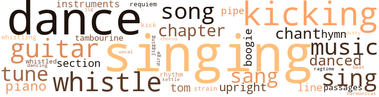
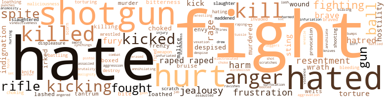
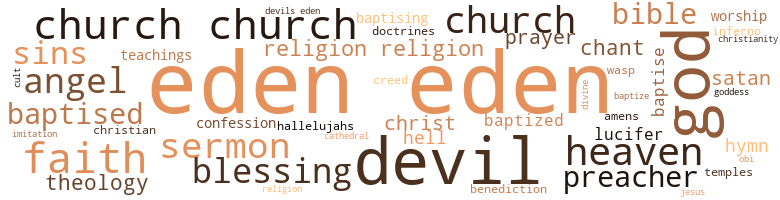

Fisher's Alley, by Briscoe, Lawrence (1973)
237 music-related terms matched in this text.
Most frequent terms in this topic: singing (28); dance (22); kicking (13); whistle (13); guitars (10)
boogie.n.01
Definition: an instrumental version of the blues (especially for piano)
| word | sentence |
|---|---|
| boogie | with my boogie in my hands ... me and my boogie was raisin ' Cain ... I had to fight to keep my boogie . . . from raisin ' Cain . |
| boogie | with my boogie in my hands ... me and my boogie was raisin ' Cain ... I had to fight to keep my boogie . . . from raisin ' Cain . |
| boogie | with my boogie in my hands ... me and my boogie was raisin ' Cain ... I had to fight to keep my boogie . . . from raisin ' Cain . |
| boogie | The big voice in Slow 's Bar Be Shack had begun to belt out again , " I woke up this morning . . . with my boogie in my hand ... had to fight to ... keep my boogie from raising ... Cain ... LAMENT Mark Jarius lost Sammie Lee somewhere in Fisher 's Alley . |
| boogie | The big voice in Slow 's Bar Be Shack had begun to belt out again , " I woke up this morning . . . with my boogie in my hand ... had to fight to ... keep my boogie from raising ... Cain ... LAMENT Mark Jarius lost Sammie Lee somewhere in Fisher 's Alley . |
chant.n.01
Definition: a repetitive song in which as many syllables as necessary are assigned to a single tone
| word | sentence |
|---|---|
| chants | No one could eat another mouthful of food , and until the body was removed the people just sat about in little groups singing old spiritual chants . |
| chant | This chant was kept up until the skies themselves seemed to respond to their grief . |
| chant | Matthew started toward the Oven as if pulled by some mysterious voodoo chant . |
| chant | He went on and on in a superfluity of words that turned into a weird chant , varying at first in a monotone , then lightning to thunder that rocked the congregation in their seats amidst a diarrhea of excited and boisterous " amens . " |
| chant | Others lounged about in their small tents , straddling their cots , tuning musical instruments or just fooling around with them and every now and then breaking out in some weird African chant . |
chapter.n.01
Definition: a subdivision of a written work; usually numbered and titled
| word | sentence |
|---|---|
| chapters | He was able to read two chapters , then Cora 's face began to obliterate the pages before his eyes . |
| Chapter | Chapter Fourteen Elizabeth Crane sat at her dressing table pampering her face at every angle and brushing her freshly dyed hair until it gleamed as bright as the gleam in her eyes . |
| Chapter | Chapter Eighteen Lark sat a table in Slow 's dance hall that morning playing coon can with him and a few early stragglers . |
| Chapter | Chapter Eight DECISIONS She walked carelessly , aimlessly toward home . |
| Chapter | Chapter Nine DEIGHTON 'S CAT RITUAL " Sammie Lee , " Maxine called on hearing the girls pass her door . |
| Chapter | " G'night " Chapter Two THE JUDGMENT Rev Jarius sat at his desk piercing wildly into the dancing flames of the kerosene lamp . |
| Chapter | Chapter Five NOT ADAM 'S ALE A disheveled , worn and grimy Mat staggered into Live Oak at the peak of dawn . |
| Chapter | Chapter Six TOM THUMB " What are you going to do now ? " |
chorus.n.01
Definition: any utterance produced simultaneously by a group
| word | sentence |
|---|---|
| chorus | The rainsoaked little group that had so courageously stuck to their places in what was left of the procession all joined in the chorus , " The winds and the waves shall obey his will . . . peace be still ... no matter where there be demons or men ... no water can swallow the ship where lies the Master of ocean . . . earth and skies . . . they all shall sweetly obey His will ... peace be still . . . " What was left of the procession drifted singing down Into the rain washed valley where the church stood hidden in the wildwood . |
dance.n.01
Definition: an artistic form of nonverbal communication
| word | sentence |
|---|---|
| dance | It had not affected her that way because throughout the dance she remembered feeling glued to the bench under a hypnotic spell with no will . |
| dance | This went on for about twenty minutes before the whistle sounded again bringing the dance to a total stop and everybody dropped laughingly to a weary sitting position on the grass . |
| dance | The music began again , and the young Negro resumed his dance . |
| dance | " Boy , dat white broad sure kin dance ! " exclaimed one . |
| dance | " I think dat was dat new dance called de ' Boogie Woogie , ' " the other burst into a fit of laughter . |
| dance | She wiggled herself over to a table against the wall where three white men sat watching her wild dance , raping every part of her body with lewd , bulging eyes . |
| dance | Waving it about his head he went into a mock feminine dance , singing in mock falsetto , " Here comes one gentleman out of Live Oak ... to court our loving daughter ... Bonnie Lu . |
| dances | I could n't have done better myself , and I know all the latest dances . " |
| dance | " The dance they were doing in there is beyond your sense of decency , if you have any left , " Eden derided . |
| dance | " No need for you to raise your voice , I saw her take the mourner 's bench tonight and participate in the dance . |
| dance | " I think a woman dropped dead doing the holy dance . |
| dance | Her confidence in Maxine weakened one night when a dance was being held at the schoolhouse . |
| dance | The thought of this being her first dance split all the shackled inhibitions of her pubescent years wide open . |
| dance | I 'm going to that dance . " |
| dance | " I saw something out there , something horrible , and you had said if I went to that dance I would . |
| dance | I never realized just how much until I went to that dance . |
| dance | Her dance partner tried to intervene and was knocked reeling to the floor . |
| dance | Turn her loose , so I can knock her down and do a bear dance on top of her bag of bones ! " |
dance.n.02
Definition: a party of people assembled for dancing
| word | sentence |
|---|---|
| Dance | They are doing the ' Holy Dance ' ! |
| Dance | The ' Holy Dance ' is something only those black people can feel and do . |
| Dance | Dance with me , old man ! " he yelled defiantly at Eden , squaring off and pivoting all about the lawn and walk . |
dance.v.03
Definition: skip, leap, or move up and down or sideways
| word | sentence |
|---|---|
| danced | The sun , sending its rays through the green leaves and branches danced in gold glittering specks upon the surface of the water . |
| danced | With fists flying like war birds , he crouched , kicked , danced and convorted all over the street with the gang , stretching them out one by one into the hot sandy street . |
| danced | The pupils of her eyes danced wildly about in their whites seeing only the horrible picture taking place before her . |
| danced | Her heart began to spin and every pulse in her body danced to the beat of her pounding heart . |
| danced | He turned his bottle up to his mouth and taking two noisy gulps she glanced up and giggled the way his Adam 's apple danced in his throat . |
| dance | " When the spirit hits them , " the woman said to him , " they will dance themselves to death if we do n't bring them out heah for air . " |
| dance | She was known to be loquacious , and he could see her eyes dance with anxiety as she closed the door behind them , piloting him through a small parlor , past a wrought iron staircase and into a spacious dining-room done up strikingly in antique extravagance . |
| dance | Why do n't you dance with me ? |
| dance | Slow asked Sammie Lee to dance . |
| dance | One of his friends asked her to dance , and she readily accepted his hand to the dance floor . |
| danced | Her pink lips rarely smiled , but her dark , sparkling eyes compensated the sullenness as they laughed and danced about mischievously in their healthy whiteness . |
| dancing | Remembering what he had whispered to Wildora , he watched the moonbeams dancing across the threshold of his open door until they gradually danced away leaving the room in darkness . |
| danced | Remembering what he had whispered to Wildora , he watched the moonbeams dancing across the threshold of his open door until they gradually danced away leaving the room in darkness . |
dirge.n.01
Definition: a song or hymn of mourning composed or performed as a memorial to a dead person
| word | sentence |
|---|---|
| dirge | The mourners began a low mournful dirge , and soon everyone joined in the low wail of the death hymn . |
ditty.n.01
Definition: a short simple song (or the words of a poem intended to be sung)
| word | sentence |
|---|---|
| ditty | She began to sing a little ditty to keep her mind on her work . |
guitar.n.01
Definition: a stringed instrument usually having six strings; played by strumming or plucking
| word | sentence |
|---|---|
| guitars | The guitars strummed a second and the choir sang " hallelujah " three times . |
| guitars | The guitars strummed louder and faster . |
| guitar | Someone in the band wagon was plunking wildly at a guitar and yelling his blues with , " T for Texas ... T for Tennessee . . . T for Texas ... T for Tennessee ... T for dat old gal Thelma . |
| guitars | Tambourines and guitars struck the folks like a prodding rod . |
| guitars | On the left side below the pulpit two men sat on small stools with their heads down against the strings of the guitars on their laps , listening intently , tuning up softly . |
| guitars | The drums and guitars became totally silent . |
| guitars | The drums picked up , followed by the guitars and choir . |
| guitars | The drums started to beat with violent agitation while frenzied fingers tore at the fiery strings of anxious guitars . |
| guitar | One guitarist interjected a loud animalistic yelp , jumping three feet off his stool into the air , plunking his guitar wildly over his head , still plunking away as he landed back on his stool . |
| guitars | The guitars whined and talked in a wild hypnotic language that only those affected by the anticipated tantalizing seizure of the " Holy Dance " could interpret . |
| guitars | The drums and guitars stopped abruptly , but the " Holy Dance " kept right on going as if the participants were marionettes moved by invisible strings . |
| guitars | The drums and guitars became activated once more . |
harmonica.n.01
Definition: a small rectangular free-reed instrument having a row of free reeds set back in air holes and played by blowing into the desired hole
| word | sentence |
|---|---|
| harmonicas | Some sat in the shade of the big barn like structure playing " 5 Up , " and some were jigging to the tunes of harmonicas . |
hymn.n.01
Definition: a song of praise (to God or to a saint or to a nation)
| word | sentence |
|---|---|
| hymn | The mourners began a low mournful dirge , and soon everyone joined in the low wail of the death hymn . |
| hymn | As the candidates neared their destination , Tate and his deacons began to wave large palms and started a lively hymn that was picked up by the marchers . |
| hymn | The baptismal hymn was softened to a monotone as each candidate was led to the water 's edge and received by an assistant who brought them to Tate . |
| hymn | The big woman went about humming a hymn , dipping pieces of seasoned fish into cornmeal and dropping them into a large smutty skillet of boiling grease sitting securely over a glowing charcoal furnace resting on two bricks in the grass in front of her shack . |
| hymn | The choir began a soft , low hymn , " I was sinkin ' deep in sin . . . far from the peaceful shore . . . Very deeply , stained within . . . sinkin ' to rise no more . . . Then the master of the sea . |
jig.n.01
Definition: music in three-four time for dancing a jig
| word | sentence |
|---|---|
| jig | If you felt the way I felt when Mark asked me to be his wife last night , I ca n't blame you for getting out there and cutting a jig , reacting to mighty feelings you 've never known before . |
jig.v.01
Definition: dance a quick dance with leaping and kicking motions
| word | sentence |
|---|---|
| jigging | Some sat in the shade of the big barn like structure playing " 5 Up , " and some were jigging to the tunes of harmonicas . |
kettle.n.04
Definition: a large hemispherical brass or copper percussion instrument with a drumhead that can be tuned by adjusting the tension on it
| word | sentence |
|---|---|
| kettle | He set a small kettle of water on a hot plate that made her curious . |
kick.v.04
Definition: kick a leg up
| word | sentence |
|---|---|
| kicking | Lark started walking slowly toward Fisher 's Alley , kicking every small item in her path . |
| kicking | Immediately after she left the room he jumped up and began pacing up and down , kicking chairs about in frustration and anger . |
| Kicking | Kicking and yelling , she fought vigorously for her liberty , and when he would not let go , she became vulgar and obstinate . |
| kicking | Slouched in the boughs in all sorts of ludicrous positions , they amused themselves by pitching acorns to sting the hind legs of the mules on the picnic grounds to agitate the beasts into kicking the food wagons over . |
| kick | With the speed of a rattler he winced free from grasping , vicious hands and began throwing all his weight behind steel like upper cuts to the jaws and mule kick punches to the belly of everyone that got in his way . |
| Kicking | Kicking the sand beneath her small sandal clad feet , she added , " See , there is more sand on this floor than in the street . " |
| kicking | Scratching and kicking , they fought violently until they were thrown over the wooden walk . |
| kicking | Lark dived in and swam swiftly , kicking her way toward the center of the pond . |
| kicking | " Start kicking those drawers off ! " |
| kicking | He could n't even discard this old piece of rubbish into Fisher 's Alley , even though he would have liked the idea of kicking my ragged ass all the way there . |
| kicking | In return , he sprawled out in the dirt , kicking and howling like a little animal wounded by B.B. shots . |
| kicking | The sugar tit flew out of his mouth as he hit the dirt , kicking and screaming in a tantrum more wild than that his brother had just gotten over . |
| kicking | The dancers were stomping , yelling , kicking , and the gals were cuttin ' up showing bright colored linens , shiny stockings and vividly colored lacy garters . |
| kicking | Sammie Lee pierced out into the denseness , kicking out a shapely leg from the baluster where she sat , exposing it to the drizzle and enjoying the soft trickle on her flesh . |
| kicking | It did n't have to signal again , because the invigorating energy produced by just the thought of a wholesome breakfast caused a reflexed action in my leg , kicking my foot out powerfully against the bottle . |
| kick | Now you take your whore and those weasels out there off my lawn before I have Baby kick you off . " |
| kicking | The giant went after their leader and in a few seconds returned , dragging a kicking and squirming Deighton behind him like a croker sack full of ' possums . |
music.n.01
Definition: an artistic form of auditory communication incorporating instrumental or vocal tones in a structured and continuous manner
| word | sentence |
|---|---|
| music | She stared in terror at the music men on the bandstand and then at the happy dancer hopping up and down on the floor with noisy clefts on the soles and heels of his shoes beating out the tune . |
| music | The music stopped . |
| music | The music began again , and the young Negro resumed his dance . |
| music | The clanking of cow bells was like music to her ears . |
| music | How good the music sounded . |
| music | Matthew stood there awhile awed by the glow and music wavering from the house through the trees with the magnitude of some evil force that pulled the souls out of man and drew their hapless bodies into its lair . |
| music | The voice of his ma was like music to his ears . |
| music | Whenever the music stopped , red coated waiters with virtually lightning like speed slid in and out from between the crowd sprinkling shaved soap flakes under their feet . |
| music | The music stopped , and she began to make her own by aping the singer of the band . |
| music | Each day he lived on , hanging on desperately to one little lonely cloud suspended in mid air , living on the sensual pleasures of her nearness , the music in her laughter and ... the heaven in her kiss . |
musical_instrument.n.01
Definition: any of various devices or contrivances that can be used to produce musical tones or sounds
| word | sentence |
|---|---|
| instruments | When the band could no longer utilize the water-logged instruments , the singing went right on . |
| instruments | Cautiously , they filed passed Slow and joined the porter on the bandstand and began to work out with various sorts of homemade instruments , constructed out of old tin wash tubs , scrub boards , buckets , saws and hair combs wrapped in paper . |
| instruments | The flashy dressed , Negro combo were taking their seats about the topless white upright piano and began tuning up their instruments . |
| instruments | Others lounged about in their small tents , straddling their cots , tuning musical instruments or just fooling around with them and every now and then breaking out in some weird African chant . |
passage.n.06
Definition: a short section of a musical composition
| word | sentence |
|---|---|
| passages | Dividing the book from the marks he found certain passages ringed by an ink pen . |
| passages | Opening it again , he glanced over the other ringed passages . |
| passages | You see , whenever old Tate gets the blues , he reads those ringed passages over and over again and they give him inspiration to stand tall in his ' yellow yam shoes . ' " |
| passages | In the parlor he sat down at the desk and began to write copies of the ringed passages from " Stanley 's Autobiography . " |
piano.n.01
Definition: a keyboard instrument that is played by depressing keys that cause hammers to strike tuned strings and produce sounds
| word | sentence |
|---|---|
| piano | From the interior of the place , a big fat piano man was beating out a wild blues on the old yellowed keyboard of a topless upright . |
| piano | The porter had just finished scrubbing the place , and flashing two rows of white teeth in his face he set his bucket and mop down beside the piano . |
| piano | Straddling the piano stool he stretched his long arms out to shape up , then dropped his spider like fingers on the keyboard . |
| piano | Spinning the piano stool lower he flopped down upon it . |
| piano | When what seemed to have been ample space anticipated for whatever he was going to do , he snapped his Angers toward the man at the piano and yelped , " Go ! |
| piano | The flashy dressed , Negro combo were taking their seats about the topless white upright piano and began tuning up their instruments . |
| piano | The piano man had stopped fumbling with the keys tuning up the boys in the band . |
pipe.n.04
Definition: a tubular wind instrument
| word | sentence |
|---|---|
| pipe | She 'll send us to Ocean Croix where the big boys really are with pockets full of dough . . . and diamond studded teeth , and champagne flows as freely as water from a hose pipe . " |
| pipes | The ivories were partially gone , and its silent pipes harbored nests for mice . |
| pipe | Nearby sat a skinny little man leisurely smoking a pipe and watching the woman with a fascinating lewdness every move she made . |
| pipe | It took courage to do what she did , although I knew her mission with pa was as fruitless as an Indian trying to smoke a peace pipe with Custer . |
ragtime.n.01
Definition: music with a syncopated melody (usually for the piano)
| word | sentence |
|---|---|
| ragtime | Ollie Vette placed a finger across Cora 's lips , and removing it she began to hum a ragtime tune as she opened one of her packages and pulled a red satin dress out of it . |
requiem.n.02
Definition: a musical setting for a Mass celebrating the dead
| word | sentence |
|---|---|
| requiem | Strict orders were issued that no buckra would be allowed to deprive any black from a seat , but they were free to witness the requiem service through the paneless windows which were only two and already filled with a half dozen black faces peeping in each . |
| requiem | " It 's . . . it 's like they 're playing a requiem to Sammie 's tangled past . |
rhythm.n.01
Definition: the basic rhythmic unit in a piece of music
| word | sentence |
|---|---|
| beat | The choir shifted over to a livelier beat : " Sinner man , you better repent ! |
rhythm.n.04
Definition: the arrangement of spoken words alternating stressed and unstressed elements
| word | sentence |
|---|---|
| rhythm | Matthew 's eyes fell on Lark for an explanation , but she was too busy shimmying to the rhythm of the band to notice them . |
| rhythm | Tambourines began to jingle , hands began to clap followed by the stamping of feet in perfect rhythm . |
section.n.01
Definition: a self-contained part of a larger composition (written or musical)
| word | sentence |
|---|---|
| section | NIGHTMARES AND DAYDREAMS Lark walked down Fisher 's Alley until the dirt street ended at a wooded section . |
| section | Sammie Lee neared the end of the wooded section in Lucy 's area . |
| section | Refusing his dinner , he prowled the tall , uncut grass in the unused section of the backyard . |
| section | Mark piloted Sammie Lee to a remote section of the pasture , thick and wild . |
| section | She saw Miriam come out of one of the larger tents in the women 's section . |
sing.v.02
Definition: produce tones with the voice
| word | sentence |
|---|---|
| sang | The guitars strummed a second and the choir sang " hallelujah " three times . |
| sing | Happily , the choir began to sing , " Toll the bell ... I done got over . . . yes , toll the bell ... I done got over ... I done got over ... at last . . . . |
| sing | The sting and monotony of their ubiquitous sing song punctuating the humid atmosphere and the stink of burning rags was enough to unnerve the strongest . |
| sang | The wagons back on the road they sang , " Sometimes through the valleys . . . through the darkest of night . . . God leads his dear children along . . . sometimes . . . when all hope seems gone . . . God leads his dear children along ... some through still waters ... " A bolt of lightning flashed downwards igniting another tree . |
| sing | bells ring . . . birds sing ... " The people stopped singing and all heads lifted to the cliff . |
| sang | Each time lightning flashed she knew she would be fried to a crisp , and when someone put a sheltering arm about her she sang out in terror thinking the prong of a fiery fork had at last touched her . |
| singing | He could clearly make out the wild songs they were singing that ended up in raucous laughter . |
| sang | She sang like a lark in your pa 's church every Sunday . |
| sang | Yeah , that gal sang like a lark . |
| sing | A wrong name for that gal too , 'cause she ca n't sing a lick . " |
| sing | bells ring . . . birds sing . . . . " A melancholy feeling struck her , and she sadly looked down toward the pasture . |
| sing | He was silenced from his sing song by a blow in the mouth that sprawled him beneath the gate at Bonnie Lu 's feet . |
| sang | Waving his arms proudly as butterfly wings over the people , he sang with all his might and made gestures for them to do likewise . |
| sang | my sheep of the pasture , " he sang out with elation . |
| sing | Tate began to sing , " They call me ' holy roly / that 's all right . . . since I git to heav 'n . . . that 's all right . . . . " The choir picked up ; then the people . |
| sing | She stopped stacking the dishes and said dryly , " What could do me more good than to hear those colored folks sing in the pasture . " |
| sing | The choir started to sing , but after two members swooned Tate was forced to give benediction and they all stumbled out . |
| sang | A female vocalist had picked up the megaphone to cry it out to the early participants slow dragging on the floor so close to each other they seemed to be fused together , rocking grotesquely in one spot as the woman sang slow and sadly , " Bye , Bye , Blues . |
| sing | She began to sing a little ditty to keep her mind on her work . |
singing.n.01
Definition: the act of singing vocal music
| word | sentence |
|---|---|
| singing | I done got over ... I done got over at last . . . . " The singing stopped . |
| singing | No one could eat another mouthful of food , and until the body was removed the people just sat about in little groups singing old spiritual chants . |
| singing | When the band could no longer utilize the water-logged instruments , the singing went right on . |
| singing | The rainsoaked little group that had so courageously stuck to their places in what was left of the procession all joined in the chorus , " The winds and the waves shall obey his will . . . peace be still ... no matter where there be demons or men ... no water can swallow the ship where lies the Master of ocean . . . earth and skies . . . they all shall sweetly obey His will ... peace be still . . . " What was left of the procession drifted singing down Into the rain washed valley where the church stood hidden in the wildwood . |
| singing | When the singing started , the unrest seemed to vanish and dark calloused hands began to clap . |
| singing | Just like a tree . . . planted by the water ... I shall not be moved . . . . " Those who could not enter the church stood patiently about talking in little groups and enjoying the singing that many joined in . |
| singing | The congregation proceeded singing , " I 'm goin ' to lay down my sword and shield . . . down by the riverside ... down by the riverside ... I ai n't goin ' to study war no more . . . . " |
| singing | The octogenarian made a gesture with his hand and the singing stopped . |
| singing | But so far , everything was turning out so well , at the present , nothing but the jubilant singing seemed to be on everyone 's mind . |
| singing | It contributed to the confusion and frustration below by over sounding the doleful singing . |
| singing | bells ring . . . birds sing ... " The people stopped singing and all heads lifted to the cliff . |
| singing | Still , they could not commit themselves to leave until the singing was completely obliterated to their ears in the distance . |
| singing | He frozed at the recognition of the voice of a woman singing out of tune above the others . |
| singing | Her almond shaped eyes that matched her hair coloring were warm , friendly and beautiful as her rich singing that forever flowed from a small , well shaped mouth under a pert little nose as sharp as a bird 's beak . |
| singing | A shaven head ebony colored man in a pungee jac and a bright colored handkerchief tied about his neck hopped upon the band stand and began singing . |
| singing | Waving it about his head he went into a mock feminine dance , singing in mock falsetto , " Here comes one gentleman out of Live Oak ... to court our loving daughter ... Bonnie Lu . |
| singing | There were many whites gathered there to hear the singing . |
| singing | After making a satisfying prospect through the tent he walked proudly back to the pulpit singing the final verse of the song . |
| singing | The choir stopped singing . |
| singing | When the singing was finished , the drums began to beat faster again . |
| singing | The singing came to a halt . |
| singing | " I 'll take it upon myself to ask pa to let you go just to hear the singing on weekday nights . |
| singing | He was thinking , perhaps he could convince him to let his ma go to the pasture to hear the singing , or take a trip to their aunt Minnie 's home in the city . |
| singing | When I arrived there , the singing from the cow pasture was all in the wind and by fate I was drawn here . |
| singing | The singing started and they entered the Big Tent . |
| singing | Bracing herself up , she tried to join the singing . |
| singing | She enjoyed playing the organ and singing doleful songs in her patois dialect . |
song.n.01
Definition: a short musical composition with words
| word | sentence |
|---|---|
| song | The sting and monotony of their ubiquitous sing song punctuating the humid atmosphere and the stink of burning rags was enough to unnerve the strongest . |
| song | Then they all broke off into the baptismal song . |
| song | Tate 's whistle punctuated the air again and the occupants in the train of moving , shaky vehicles began to boom with song . . . " Toll the bell ... we done got over . . . yes . . . toll the bell ... we done got over ... we done got over at last ... " Matthew and Mark watched intently until the last vehicle had pulled out of the cow pasture and became lost in the dust of the gravel and dirt road . |
| songs | He could clearly make out the wild songs they were singing that ended up in raucous laughter . |
| song | The icy wind scuttled across the frozen ground whistling its winter song through the naked trees . |
| song | He was silenced from his sing song by a blow in the mouth that sprawled him beneath the gate at Bonnie Lu 's feet . |
| song | His lips moved , murmuring inaudibly at first , then loud and boisterous in song . |
| song | Now , everyone joined in the opening song , " They call me holy roly , that 's all right . |
| song | After making a satisfying prospect through the tent he walked proudly back to the pulpit singing the final verse of the song . |
| songs | She enjoyed playing the organ and singing doleful songs in her patois dialect . |
tambourine.n.01
Definition: a shallow drum with a single drumhead and with metallic disks in the sides
| word | sentence |
|---|---|
| Tambourines | Tambourines and guitars struck the folks like a prodding rod . |
| tambourine | Even his proud parents were never too proud to come and beat out a tambourine under his little oilcloth tent . |
| tambourines | Behind him , occupying four long benches were his white robed choir , each equipped with two tambourines . |
| Tambourines | Tambourines began to jingle , hands began to clap followed by the stamping of feet in perfect rhythm . |
tenor_drum.n.01
Definition: any of various drums with small heads
| word | sentence |
|---|---|
| tom-toms | From the Tent came the first beat of the tom-toms announcing the revival was about to begin . |
| tom-toms | They were accompanied by two others making low noises on tom-toms between their legs . |
| tom-toms | Tangled arms fought the air to louden their clapping hands , legs twisted and kicked about as bare feet stamped the ground with every savage beat of the tom-toms . |
tone.v.01
Definition: utter monotonously and repetitively and rhythmically
| word | sentence |
|---|---|
| chant | Every voice began to chant , " Swing low . . . sweet chariot . . . cornin ' for to carry me home . . . swing low . . . sweet chariot . . . cornin ' for to carry me home ... I looked over Jordan . . . and what did I see ... a band of angels . . . cornin ' after me . . . cornin ' for to carry me home . . . . " There were muffled sobbing . |
| chant | They began to chant , " I 'm goin ' to lay down my burden ... down by the riverside . . . down by the riverside ... I ai n't gon na study war no more . . . ai n't gon na study war no more . |
tune.n.01
Definition: a succession of notes forming a distinctive sequence
| word | sentence |
|---|---|
| lines | Her eyes traveled slowly with the movements of her hand as she tenderly traced the soft lines about his eyes and mouth . |
| tune | Ollie Vette placed a finger across Cora 's lips , and removing it she began to hum a ragtime tune as she opened one of her packages and pulled a red satin dress out of it . |
| tunes | Some sat in the shade of the big barn like structure playing " 5 Up , " and some were jigging to the tunes of harmonicas . |
| line | There was a change in Mark 's face as his eyes traveled over line after line . |
| tune | Pa , " then went into an agile tap dance to the tune of " Bye , Bye , Blues . " |
| tune | She stared in terror at the music men on the bandstand and then at the happy dancer hopping up and down on the floor with noisy clefts on the soles and heels of his shoes beating out the tune . |
| line | Finally , when he did get to Ocean Croix , he was flat broke , giving me a line that he had been taken in a card game . |
| tune | As she drifted in the direction of Big Lucy 's house , she could hear the hired Negro combo beating out the latest tune , " Bye , Bye Blues . . . do n't cry . . . do n't sigh , moon is pining . . . sun is shining . |
| tune | He frozed at the recognition of the voice of a woman singing out of tune above the others . |
| tune | The tuning noises of the band had stopped and taken on a tune played soft and slow . |
| line | Your pa came from a long line of preachers and yet he bigged that girl . " |
| tunes | She could hear the jazzy tunes of the band and gay laughter of the merry makers . |
| strain | You 're under strain , Miss Maxine . |
| line | He knew his eyes would not permit him to read another line , yet he had no desire to go to bed . |
| strains | do n't cry ... do n't . . . sigh . . . " The langourous strains seeping under the door of Slow 's quarters dashed Sammie Lee in the face like cold water , sobering her . |
upright.n.02
Definition: a piano with a vertical sounding board
| word | sentence |
|---|---|
| upright | From the interior of the place , a big fat piano man was beating out a wild blues on the old yellowed keyboard of a topless upright . |
| upright | Startled , she sat upright in bed . |
| upright | Then tucking her legs under her , she sat upright and puckered her lips , saying nothing . |
| upright | Her sickness got worse , and she began to retch so violently she had to sit upright in bed . |
| upright | You know ... I remember ... " Here , Matthew stopped abruptly and sat upright in bed , his eyes fixed beyond the space of the room . |
| upright | Elizabeth Crane sat up upright in bed . |
vocal_music.n.01
Definition: music intended to be performed by one or more singers, usually with instrumental accompaniment
| word | sentence |
|---|---|
| vocal | She sat the child to the ground where he stretched out in good vocal . |
whistle.v.01
Definition: make whistling sounds
| word | sentence |
|---|---|
| whistle | He gestured to Mark and putting two fingers between his lips , he gave a shrill whistle . |
| whistle | He blew his whistle . |
| whistle | Elder Tate blew one shrill blast on his whistle . |
| whistle | Elder Tate 's shrill whistle split the air . |
| whistle | This went on for about twenty minutes before the whistle sounded again bringing the dance to a total stop and everybody dropped laughingly to a weary sitting position on the grass . |
| whistle | He blew his whistle . |
| whistle | Tate 's whistle punctuated the air again and the occupants in the train of moving , shaky vehicles began to boom with song . . . " Toll the bell ... we done got over . . . yes . . . toll the bell ... we done got over ... we done got over at last ... " Matthew and Mark watched intently until the last vehicle had pulled out of the cow pasture and became lost in the dust of the gravel and dirt road . |
| whistling | Matthew put an arm about his brother 's shoulders and together they left the cow pasture , leaving behind only the moderate breeze whistling softly through the pines , and the steady clinking of cow bells . |
| whistle | She heard him whistle for his dog , and her heart sank at the sound of footsteps trailing off the porch . |
| whistled | Ignoring her pleas , he whistled for Blue , who shot out of the shrubs . |
| whistle | Ignoring her , Deighton and his gang began to whistle at the scantily clad girls standing beside her . |
| whistling | The icy wind scuttled across the frozen ground whistling its winter song through the naked trees . |
| whistle | Elder Tate blew a shrill whistle which seemed to cast a hynoptic spell . |
| whistle | Elder Tate blew his shrill whistle again . |
| whistle | Seeing that the spirit had not gone out of them , he blew his whistle again . |
| whistle | " Next time you come in , whistle before you intrude upon my privacy ! " |
| whistled | He whistled . |
660 violence-related terms matched in this text.
Most frequent terms in this topic: fight (49); hate (42); hated (32); shotgun (32); hurt (29)
abhor.v.01
Definition: find repugnant
| word | sentence |
|---|---|
| loathed | Like Mr. Grey , he loathed chickens . |
| loathed | Some he liked , and some he loathed . |
| loathed | One of the few things he loathed was that he could not civilize her to his fashion , and her primitiveness made her an open house for everything that pissed against the wall . |
abhorrence.n.01
Definition: hate coupled with disgust
| word | sentence |
|---|---|
| loathing | The only thing I see fit to call it is one big , stupid illiterate impulse that ravishes the mental faculties like some loathing promiscuous disease . |
| loathing | One man , nearest to Lark , leaned over and passed a loathing remark . |
abrasion.n.01
Definition: an abraded area where the skin is torn or worn off
| word | sentence |
|---|---|
| scratch | " Go scratch yourself ! |
| scratch | " Go scratch yourself ! " |
| scratches | The unexplained scratches on his face were still vivid , but she did n't give the mystery a second thought . |
aggravation.n.01
Definition: an exasperated feeling of annoyance
| word | sentence |
|---|---|
| aggravation | " You 're already in , " Lark said with some aggravation after being up half the night at Big Lucy 's . |
aggravation.n.02
Definition: unfriendly behavior that causes anger or resentment
| word | sentence |
|---|---|
| provocation | A love so fiery that under ordinary circumstances any whole man in his right senses would yield under the slightest provocation on her part . |
| provocation | Her body was warm and soft , and she seemed so willing to give love that without the slightest provocation he could have taken her right on the spot , but he did n't want it that way . |
aggression.n.01
Definition: a disposition to behave aggressively
| word | sentence |
|---|---|
| aggression | Through trembling lips she said , " I 'm awfully proud of Mark 's aggression , but he 's cleaning house out a bit too far . |
alcoholism.n.01
Definition: habitual intoxication; prolonged and excessive intake of alcoholic drinks leading to a breakdown in health and an addiction to alcohol such that abrupt deprivation leads to severe withdrawal symptoms
| word | sentence |
|---|---|
| alcoholism | THE RESPECTABLE SHINEY RUNNERS Eden and Matthew watched curiously as Doc Mills treated one of Tate 's workers for alcoholism . |
anger.n.01
Definition: a strong emotion; a feeling that is oriented toward some real or supposed grievance
| word | sentence |
|---|---|
| anger | Then in anger he shouted in virtually deaf ears , " Where y ' get the stuff , Abe ? " |
| anger | Catering to | a passion of resentment , anger and defeat , Lark jumped up , grabbed up rocks and pebbles from the pond 's edge and sent them whizzing at the cows . |
| anger | In her anger , Sammie Lee had hurled a brick directly into the showcase . |
| anger | In her anger and subdued pride she made no attempt to move . |
| Anger | Anger showed in Sammie Lee 's eyes . |
| anger | A streak of anger and hurt shot through her quenching the fire she had built in her . |
| anger | The exuberance died off Ollie Vette 's face after seeing Cora 's anger was real . |
| anger | Holding her head down she tried to repress the rising anger of her remorse , but failing she screamed out , " I bought these things to wear , and I 'll give them to no one because I will be needing them from now on ! " |
| anger | Immediately after she left the room he jumped up and began pacing up and down , kicking chairs about in frustration and anger . |
| anger | It will be gossip now , " she scoffed , feeling anger about the situation for the first time . |
| ire | " Listen you ! " her voice filled with ire , " You ran like hell yourself before you became a cripple . |
| anger | Lark became silent and Miriam could see anger and boredom rising in her face . |
| anger | Dropping his head he chuckled in a derisive way at her anger . |
| anger | Shifting the stick with anger and pride she turned the truck about with her girls laughing in falsetto tones as she sped off the lawn honking her horn furiously and not caring about who she ran down if they did n't have the sense to cut capers in getting out of the way of the screeching truck that sprayed a barrage of pebbles as the tires struck the gravel road . |
| anger | Perspiration exuded from Deighton 's face in his rising anger . |
| anger | She was not surprised by his sudden anger . |
| anger | So striking was this resemblance she had to clamp her teeth down on her tongue to keep her anger from turning into laughter . |
| anger | From the short distance , he thought he saw anger in those large green eyes and her lips murmured something that he did not hear . |
| anger | It ripped off , and the fiery haired girl turned on him in anger . |
| anger | Preaching his regular sermon , several times his anger almost forced him to remark concerning the absentees , but he managed to keep within control . |
| anger | I said , his anger at life , the torment of frustration had not reached the core . |
| anger | Her eyes stared up at the broken plastered ceiling where she could see the anger on his handsome face . |
| anger | " It seems as though they 're trying to run me out of here , " John tried to laugh his anger away because of the girl . |
| anger | Eden 's blood began to heat in his rising anger . |
| anger | Eden could not recall just what followed , but all he knew was that he saw the devil , and in his hate and anger he found himself on top of Deighton Norwood cracking his head against the cobbled walk again and again until he was pulled roughly off . |
| anger | Then remembering that Maxine 's absence was not new , the mystery caused a hot feeling of anger to come over her as she realized that each time , Maxine was never in her room until sometime later . |
| anger | The grin slowly died off her lips and her face became cold , matching the cold resentment in the anger of her eyes . |
anger.v.02
Definition: become angry
| word | sentence |
|---|---|
| Angered | Angered by her fight he made another attempt to put her asleep in a way that she would n't come back too quickly before he had filled his desire to enjoy her . |
animosity.n.01
Definition: a feeling of ill will arousing active hostility
| word | sentence |
|---|---|
| animosity | By blocking the clear passages to his heart with dams of animosity , bridges of hate , prejudice , selfishness , mountains of intolerance and intense discord , he can become brute , loveless , lovelorn and worse than all , he becomes Godless because the source of these riverlings is God . " |
annoyance.n.02
Definition: anger produced by some annoying irritation
| word | sentence |
|---|---|
| vexation | She was not frightened by his vexation , but found him rather annoying in defense for that fast girl . |
assail.v.01
Definition: attack someone physically or emotionally
| word | sentence |
|---|---|
| assaulted | Sammie Lee let out a piercing scream and would have assaulted her ma if Eden had not grabbed her . |
attack.v.01
Definition: launch an attack or assault on; begin hostilities or start warfare with
| word | sentence |
|---|---|
| assailed | Lark remained sober faced as she felt herself being assailed by the deception of her smile in the past . |
battle.v.01
Definition: battle or contend against in or as if in a battle
| word | sentence |
|---|---|
| battled | While Tate 's workers battled the enraged bull out of camp , Doc Mills rushed to the still little form crumpled in a heap on the ground . |
| battling | It was this " something " that he found himself battling with everyday to survive the poverty of the increasing loneliness . |
| battling | Under heavy droopy eyelids , he caught a glimpse of Matthew coming up to the house , battling his way through runaway weeds , tall grass and discarded debris . |
blaze_away.v.02
Definition: shoot rapidly and repeatedly
| word | sentence |
|---|---|
| Blazing | I wanted to succumb to every animalistic passion that burned within me , and baby they were blazing 1 Blazing for him ! |
bleeding.n.01
Definition: the flow of blood from a ruptured blood vessel
| word | sentence |
|---|---|
| bleeding | She ran to the bleeding animal and knelt beside him . |
| bleeding | Bonnie Lu hung on to the gate , although she did suffer a little for the bleeding boy , her Peachess pride sustained her not to move one step toward him . |
boot.v.01
Definition: kick; give a boot to
| word | sentence |
|---|---|
| booted | Rev Jarius raised his booted foot , and John rolled over timely to elude the blow . |
box.v.03
Definition: engage in a boxing match
| word | sentence |
|---|---|
| boxed | Mama Sug flew into a rage , grabbed Addie by the shoulders and boxed her ears so painfully the child slinked to the ground holding that side of her face . |
| boxed | I boxed four boxes of books out of his tent . |
| boxed | As a matter of fact I boxed up a lot of useful things to go to him . |
bruise.n.01
Definition: an injury that doesn't break the skin but results in some discoloration
| word | sentence |
|---|---|
| bruise | For a second Lark could n't move , neither could she take her eyes off the nasty raw bruise on one of Sammie 's legs . |
| bruises | After Doc Mills treated Lark 's mouth , he began cleaning and patching up Eden 's bruises . |
| bruises | Slow introduced the men to her and after she had had a few drinks he took her into his private quarters and cleaned out the bruises on her back . |
bump.n.01
Definition: a lump on the body caused by a blow
| word | sentence |
|---|---|
| bumps | One of the men placed a tightly folded five dollar bill on the table and almost went out of his mind as Sammie Lee began wriggling vigorously with bumps and grinds in preparation to pick it up between her thighs without her hands touching it . |
butcher.v.01
Definition: kill (animals) usually for food consumption
| word | sentence |
|---|---|
| slaughtered | Four calves and three goats were slaughtered , dressed and seasoned with herbs . |
| slaughtered | He charged into camp , picking up speed as the odor of the fresh slaughtered calf stirred his temperance into seething , blind confusion . |
cannon.n.04
Definition: heavy automatic gun fired from an airplane
| word | sentence |
|---|---|
| cannon | He shot off the porch as if he had suddenly been discharged from a cannon . |
contemn.v.01
Definition: look down on with disdain
| word | sentence |
|---|---|
| scorn | He laughed with scorn . |
| despised | The more she thought of him putting her sister on the same level with the washerwoman 's daughter , the more she despised him . |
| scorn | Lark , Sammie Lee , Doc Mills and the few whites that were baptised with the blacks came up out of the water to meet a barrage of acorns , scorn and ridiculing laughter . |
| despised | He hated this place and despised it for its cruelty and corruption . |
| despise | You have the devil eyes of Peter Jarius , a man I despise . |
| despised | She despised to drink from this crude cup , but bringing it to her lips , she thought of how Lark and Mammy Moody always brought her favorite bone china cup . |
| despised | " It 's a school all right , " Lark cut in , giving Lucy a despised look . |
craze.n.02
Definition: state of violent mental agitation
| word | sentence |
|---|---|
| frenzy | In a frenzy , Mama Sug grabbed Addie roughly to her feet and shook her violently . |
| frenzy | He jumped barb wire fences , upsetting tumble down chicken coops that provoked barking dogs into hellish frenzy . |
| frenzy | Hands clapped faster and feet stamped in such a frenzy that anxious and twitching bodies had to leave their seats to keep up with rapid , involuntary movements . |
cut.n.05
Definition: a wound made by cutting
| word | sentence |
|---|---|
| gash | Blood oozed profusively from a gash in his head . |
dagger.n.01
Definition: a short knife with a pointed blade used for piercing or stabbing
| word | sentence |
|---|---|
| daggers | " I can feel hundreds of little daggers in my back . |
destroy.v.04
Definition: put (an animal) to death
| word | sentence |
|---|---|
| destroy | My own sons grew up into verminous beasts who would destroy me . |
| destroy | You , who have always been virtually an angel all your life , and now something deceptively pretty is coiling around you like the delicate ribbons wrapping a Maypole , only you are too blind in your foolish passions to see they are not pretty ribbons but the deadly tentacles of the devil out to destroy you and everything that you have worked for all your life . |
displeasure.n.01
Definition: the feeling of being displeased or annoyed or dissatisfied with someone or something
| word | sentence |
|---|---|
| displeasure | Ollie Vette wrinkled her nose in sheer displeasure at what Cora had just said . |
| displeasure | Wrinkling her nose in sheer displeasure , she bawled again , " Answer me . " |
draw.v.23
Definition: pull (a person) apart with four horses tied to his extremities, so as to execute him
| word | sentence |
|---|---|
| drew | When he would n't budge , she drew up both knees beneath him and kicked out with all her strength against his groin . |
electrocute.v.02
Definition: kill by electrocution, as in the electric chair
| word | sentence |
|---|---|
| electrocuted | Six of Tate 's mules had been electrocuted by lightning and eight hounds had panicked and run off . |
eliminate.v.03
Definition: kill in large numbers
| word | sentence |
|---|---|
| annihilate | ' You can only annihilate an animal like that with intelligence . " |
| annihilating | " You are annihilating your own self . " |
envy.n.01
Definition: a feeling of grudging admiration and desire to have something that is possessed by another
| word | sentence |
|---|---|
| envy | A mass of thick curls like his pa had , was the envy of many women that had to do nightly tie-ups with twisted brown paper . |
| envy | Now , the thought of him praising that woman for her lovely work almost turned her green with envy . |
| envy | She got up and went toward her room after resenting the doubtful look in Maxine 's eyes which was really not doubt at all but envy . |
erase.v.01
Definition: remove from memory or existence
| word | sentence |
|---|---|
| erased | The thought of Cupid and her surprising act had erased all doubts from his mind about the others . |
ferociousness.n.01
Definition: the trait of extreme cruelty
| word | sentence |
|---|---|
| viciousness | The foolish feeling she bore for a man who she knew so little about was bringing out all the viciousness of uncontrolled passions that Cora never knew was in her . |
| brutality | Even though I feel what you feel toward him for his ignorant brutality , it would have not been right for us to double team him in front of ma . " |
fight.n.02
Definition: the act of fighting; any contest or struggle
| word | sentence |
|---|---|
| fighting | Returning to the porch , Mark admitted , " It frightens me to see her fighting for life . |
| Fighting | Fighting back the tears , she sneaked into the parlor and hid behind a big cushioned chair where she could get a view of the bar room through the open parlor draperies . |
| combat | He cussed and squared off for physical combat . |
fight.n.05
Definition: a boxing or wrestling match
| word | sentence |
|---|---|
| fight | She had made her exit sometime during the fight . |
| fight | I guess I have always loved him from the first time we cleaned him up from the fight with Deighton Norwood . |
| fight | Angered by her fight he made another attempt to put her asleep in a way that she would n't come back too quickly before he had filled his desire to enjoy her . |
| fight | " This is not your fight , you black mendicant rascal . |
| fight | I had no fight with him . " |
| fight | The doors of the boarders began to crack open in the hall , but no one dared to interfere with a man and a private fight with his wife in their bedroom . |
| fight | We do n't want no fight with you . |
| fight | An excited , yelling audience had collected on all sides of the fight . |
| fight | Women shrieked while the men rooted loudly for no particular side but for the stimulation of a good fight . |
| fight | So many times she was on the brink of tears , but Mammy Moody had helped her fight them off . |
| fight | This , she converted all her attentions to hanging on to it rather than releasing it any longer on him to continue a long , hopeless fight that had been lost long ago . |
| fight | Once there , he gave up the fight and thudded heavily against the thin carpeted floor . |
| fight | There was a commotion going on in one corner of the hall like a fight had broken out or something similar was taking place . |
| fight | Bonnie Lu , seeing that he would n't last long in the dirty dog fight , yelled , " Pa ! " |
| fight | They seemed to live in a world of their own , coming out only to squabble and fight . |
| fight | Then he knew his fight with aunt Miriam would be over . |
| fight | That fight with John was certainly no balm for his condition . " |
| fight | Matthew 's face dropped and Doc Mills regretted that he had spoken so harshly , because after all , he had no fight with Rev Jarius 's sons . |
| fight | It was no doubt that Deighton was anticipating a fight . |
| fight | Screaming , Lark rushed into the fight swinging the branch like a wild woman . |
| fight | Deighton and his gang saw him and all the fight and shiney was knocked out of them as they made through the trees . |
| fight | In John 's room , Mark related the true story of his fight with their pa . |
| fight | She knew not what , but suddenly she felt fight all through her veins . |
fight.v.02
Definition: fight against or resist strongly
| word | sentence |
|---|---|
| fighting | Shaking her hair back off her face , she stood there staring weirdly at him , fighting out of the web of intrigue that had suddenly surrounded her . |
| fought | He laughed at her protests and fought for more kisses . |
| fought | Turning her head , she fought the nausea . |
| fought | She restrained herself from any outcries but she fought vici - ously to mark his face with her nails . |
| fight | Each night when he came in he expected to find her sleeping in his bed , and when he did n't he would fight to stay awake , his ears attuned to every sound that might be the lucky sound of her footsteps . |
| fight | She threw up both hands to fight with him , but he quickly pushed her over the threshold and closed the door . |
| fighting | I heard them fighting and I heard Cupid crying . |
| fought | Kicking and yelling , she fought vigorously for her liberty , and when he would not let go , she became vulgar and obstinate . |
| fight | When she was finally in a position to fight , she fought so fiercely that he was forced to strike her . |
| fought | When she was finally in a position to fight , she fought so fiercely that he was forced to strike her . |
| fight | Realizing what had happened to him , he started to fight with Matthew . |
| fighting | My own brothers fighting me for that ... no good heifer ! " |
| fought | Maxine fought ^ desperately to wheel her way through the crowd that u would n't budge as they froze at the distance they had 1 cowered back from Rev Jarius 's target . |
| fought | She fought her way backwards through the crowd where Effe sat astounded piercing at her husband on the mound . |
| fought | She fought her way to Fisher 's Alley hoping to find shelter under the shed of Old Zeke 's closed stand . |
| fight | She would try to fight the tension . |
| fight | with my boogie in my hands ... me and my boogie was raisin ' Cain ... I had to fight to keep my boogie . . . from raisin ' Cain . |
| fight | Thank goodness I do n't have to fry them or fight cats . " |
| fight | He heard her plea , " Do n't fight it ! |
| fight | Eden , please do n't fight it ! " |
| fight | She would fight him if he touched her . |
| fought | She fought with the fury of something born close to Hades , but the muscles of her soft flesh were nothing compared to his . |
| fight | She did n't want him to fight with Eden because she knew the alley cat way he fought to win , besides the whole gang would beat Eden to a pulp . |
| fought | She did n't want him to fight with Eden because she knew the alley cat way he fought to win , besides the whole gang would beat Eden to a pulp . |
| fight | I had no power to resist , no strength to fight , all I did was to let myself be drawn in slowly , tightly in his arms . |
| fight | They began to fight like cats . |
| fought | Scratching and kicking , they fought violently until they were thrown over the wooden walk . |
| fight | In the stillness , she had to fight to keep her eyes open , and the heat was almost overwhelming . |
| fight | Whatever I do to you , do n't fight against me , just respond . |
| fighting | Luke watched his brother strain his eyes through the dark porch screen at the moon fighting to elude the puffy clouds that were effortless trying to blot it out . |
| fight | He tried to fight it by telling himself that she was not a child , but a woman . |
| fight | " I do n't want to fight with you . |
| fight | " He was drunk , and I did n't want to fight with him . " |
| fight | * Tf you were man enough to leave this house on your own , get up and fight like a man . " |
| fight | " I do n't want to fight you , pa ! |
| fought | She fought with her emotions , and once that was accomplished , she had the strength to scheme her next move rationally . |
| fight | " It 's futile to fight ignorance with ignorance , " he said . |
| fight | The big voice in Slow 's Bar Be Shack had begun to belt out again , " I woke up this morning . . . with my boogie in my hand ... had to fight to ... keep my boogie from raising ... Cain ... LAMENT Mark Jarius lost Sammie Lee somewhere in Fisher 's Alley . |
| fighting | Slinging the bag over the porch , the surrounding atmosphere was filled with hissing and spitting of fighting cats where the bag had fallen . |
| fighting | He had made her see the light and now that her eyes were open , she realized she had lost the battle she had been fighting ever since she ran away from him in Ocean Croix . |
| fight | " Did you bring me out here to fight Indians ? " |
| fought | Tangled arms fought the air to louden their clapping hands , legs twisted and kicked about as bare feet stamped the ground with every savage beat of the tom-toms . |
| fight | Do n't fight your pa ! " |
| fight | " Do n't provoke your son to fight you . " |
| fighting | Sammie Lee stood there a while with balled up fists fighting the tears that were trying to come into her eyes . |
| fight | " I do n't wan na fight ! " |
| fighting | Dropping his hands to his side , he said , " I think you 're all right now , but I 'll advise you to run instead of fighting again today . " |
| fighting | She was fighting to control an emotionable disturbance that would bring a passion of tears if her daughter kept the accusations up . |
| fought | She fought fiercely for balance to keep on her feet . |
| fighting | Stopping at the rope swing Leonard Peachess had set up over the limb of a large evergreen for his younger girls , John dropped carelessly into the wooden seat and began rocking leisurely to and fro keeping his eyes fixed on the girl in the garden who was fighting with herself to elude his lewd vigilance . |
fit.n.01
Definition: a display of bad temper
| word | sentence |
|---|---|
| tantrum | In his wrath that someone had distracted his mother 's attention from him , he squirmed and kicked violently against her big belly and finally in a tantrum , reached up and pulled the faded kerchief from her head . |
| tantrum | The tantrum of the other child was brought under control by a big red apple . |
| tantrum | The sugar tit flew out of his mouth as he hit the dirt , kicking and screaming in a tantrum more wild than that his brother had just gotten over . |
frustration.n.03
Definition: a feeling of annoyance at being hindered or criticized
| word | sentence |
|---|---|
| frustration | The loss of her son had broken her down , and she had nothing left but empty hours filled with torment and anguished frustration . |
| frustration | She loved him but now the horrible thought that he had used her just as he did the others be - fore her was slow torture driving her deeper into an abyss of frustration . |
| frustration | Immediately after she left the room he jumped up and began pacing up and down , kicking chairs about in frustration and anger . |
| frustration | Matthew slapped a haughty hand on Mark 's shoulder who stood there expressionless and silently as his throat seemed constricted and frozen in his frustration . |
| frustration | It contributed to the confusion and frustration below by over sounding the doleful singing . |
| frustration | I said , his anger at life , the torment of frustration had not reached the core . |
| frustration | I am proud to say that perhaps I can do even better because I have known the frustration of the poverty of pain in every phase in human suffering . |
| frustration | Whatever correlation there was between her and Maxine seemed to vanish as pent-up feelings of frustration and confusion became predominant . |
fury.n.01
Definition: a feeling of intense anger
| word | sentence |
|---|---|
| rage | Mama Sug flew into a rage , grabbed Addie by the shoulders and boxed her ears so painfully the child slinked to the ground holding that side of her face . |
| rage | Sammie Lee flew into a rage beside Maxine 's bed . |
| fury | " Sorry for me I Sorry for me ! " she repeated with fury . |
| rage | Suddenly a heated rage came over him as he thought of the things his wife had said . |
| rage | Shaking her head away from him , she yelped violently with rage so loud he was forced to clamp his hand across her mouth . |
| rage | Lark snatched the sheet from the clothes line , balled it up tightly and in a rage threw it with such a force at the naked girl that the impact almost knocked her out of the tub as she stood to catch it . |
| fury | She fought with the fury of something born close to Hades , but the muscles of her soft flesh were nothing compared to his . |
| fury | Catching at her hands , he laughed at her fury . |
| rage | Then turned like something in a rage and yelled out , " Here 's something for all you door poppers to see . |
| rage | Accepting their actions as derogatory , Sammie Lee flew into a rage . |
| fury | Excitement surged through her veins as she felt the fury of the fire that overwhelmed the dancers and was lapping out at her . |
| fury | His face held fury and vindictiveness for the man who had just went out of the door leaving behind a reflection of sordid antipathy . |
| fury | Matthew rose and stood near his brother whose face had turned a beet red as he faced his pa with the fury of insidious irritations . |
| rage | Lionel Slow jumped up from the table , and in a fit of rage snatched her from her excited partner . |
gag.v.06
Definition: cause to retch or choke
| word | sentence |
|---|---|
| choking | His words came jumbled , choking back down his throat in his sudden wrath . |
| choked | You ! " he choked . |
| choking | So badly , it was choking her to come out , she sprang from bed to catch her breath . |
| choked | Her head moved from side to side , and her arms floundered about in some crazy way to demonstrate her choked , inner feeling that could no longer penetrate the swollen lips in words . |
| choke | His head ached so badly across his brow that his vision was partially blurred and every second he felt as though his stomach would turn inside out and choke him to death . |
| choked | " Forgive me , darling , " she choked out . |
| choked | At last Mammy Moody showed up and fussed the whole while Maxine almost choked in her fast , excited eating . |
gall.v.02
Definition: irritate or vex
| word | sentence |
|---|---|
| irked | Because her suspicion was now aroused she began to search deeply into each of her girls for something that had never irked her to do before . |
| Irked | Irked by her senseless reply , he jumped up and snatched her roughly to her feet . |
| irked | It irked him and he tightened his grip on her arm more so . |
| irked | Sometimes it irked him because he could not break her out of it . |
gun.n.01
Definition: a weapon that discharges a missile at high velocity (especially from a metal tube or barrel)
| word | sentence |
|---|---|
| gun | His right arm zigzagged out and upwards , accidently discharging the gun at the ceiling . |
| gun | Matthew picked up the shotgun , emptied the spent shell out and slid the gun back into the slots on the wall . |
| gun | Mark snapped , grabbing the gun from Matthew 's hand . |
| guns | George Diamond rested an arm on his brother 's shoulder as they both watched the two hunters leave the shop chatting excitingly as two boys going on their first bird hunt with B.B. guns . |
| gun | Taking the gun from the basket , she wrapped it in a spare tablecloth she found on the table . |
| gun | The explosion of the gun had virtually paralyzed Maxine hemmed in by the crowd , but her daughter 's cry for her had struck like a lightning bolt refreshing her with new energy . |
| gun | She knocked it violently away and with the gun on her lap , she wheeled as rapidly as she could through the trees to get in the back of the mound . |
| gun | He stopped in his tracks , a little puzzled as he stared into the barrel of his own gun . |
| gun | Now use your common sense and give me my gun . " |
| gun | " Give me that gun before I take it from you ! " |
| gun | It struck the gun in his hands causing it to explode . |
| gun | Picking up his gun , he gave it a significant pat and went into the house . |
| gun | Without catching their eyes , he raised the gun and blasted away at the dress Lark had so carefully mended and washed . |
| gun | The gun flew out of his hands as he tried to protect his face . |
| gun | For two lousy cents , he would have landed a fist into that big corseted belly of hers , but he knew the giant who she called Baby , and the only way to stop him from cracking every bone in your body once she had given him the command , was j to gun him down on the spot . |
harm.v.01
Definition: cause or do harm to
| word | sentence |
|---|---|
| harmed | Then as a tear pushed down the side of his nose , he added through muffled tones , " That poor critter never harmed anybody . |
| harm | " I told you I did n't come here to harm you or your people , but if I have to . |
| harm | There is nothing you can say to make me believe that you are not trying to do me harm either mentally or bodily because I refuse to sit my life away at the foot of your bed and do your bidding . |
hassle.n.02
Definition: disorderly fighting
| word | sentence |
|---|---|
| tussle | She stripped off the dirty torn clothing , and her muscles ached from her tussle with John Jarius . |
hate.n.01
Definition: the emotion of intense dislike; a feeling of dislike so strong that it demands action
| word | sentence |
|---|---|
| hate | A disturbing diabolical hate surged through Hal . |
| hate | Elizabeth Crane 's intensive jealousy and hate for Samu-ella Grey prompted her to exaggerate the evil of it all . |
| hate | We , who were created just a little lower than the angels , but took on the Lucifer pride of superiority that warped our minds with so much hate that we will not suffer ourselves to go one step out of the way to tolerate the differences in our soul brothers and sisters . |
| hate | Only hate and fear could have prolonged your dying because you do n't know where you 're going . |
| hate | Valentine developed a hate for John after the confession of her twin . |
| hatred | She could no longer stand to hear her muffled weepings at night which increased her hatred for John that drove her to tell her oldest sister . |
| hate | The more Leonard Peachess thought on this , the more he drank to pacify his grief until he found himself turning into an apathetic fragment of hate . |
| hate | I 'll admit that I was disapproving of you and my nephew , but it was neither jealousy nor hate . |
| hate | " Get out , you stinking goat ! " she screamed at him with hate and hell in her words . |
| hate | I could not have seen this with a heart full of hate , blanketing my vision . |
| hate | A dead spirit sets up barriers against everything but hate . |
| hate | By blocking the clear passages to his heart with dams of animosity , bridges of hate , prejudice , selfishness , mountains of intolerance and intense discord , he can become brute , loveless , lovelorn and worse than all , he becomes Godless because the source of these riverlings is God . " |
| hatred | She had hated his children because she believed their hatred for her was worse . |
| hatred | It was Hatfield 's chickens and the Greys hatred for them that kept a feud going between the families for years . |
| hatred | She saw the face of the woman who she had known almost all her life change into something sinister as all the hatred for her suffering throughout the years became something so alive that her body shook with some kind of evil spasm . |
| hate | For a moment , a bit of hate surged through him for John and his pa , and his hands began to itch to knock him back into the ditch where he had found him in his dirty act , but he knew this would not solve the problem , that is the way he wanted to solve it . |
| hatred | The tension between them unbroken by words , but each understood the present hatred of the other . |
| hate | He also understood that he could have never felt love for this man , or the hate he now felt could not have turned bloodthirsty so quickly . |
| hate | She knew just before the fall , in his guilt and hate he would revenge everything that was connected with it . |
| hatred | The small eyes of Jarius became narrow slits , his lips curled into a malignant snarl portraying the venomous hatred he felt for this discarded surgical wipe who knew too much about him . |
| hate | Is it possible that she is trying to revive that hate and enslave me too ? " |
| hate | She was too young to assume such an emotion was taking place within her , even though sometimes her embitterment was mistaken for hate whenever Maxine stopped her from going places , but somehow she always managed to rationalize this as a self pitying mood . |
| hate | Eden could not recall just what followed , but all he knew was that he saw the devil , and in his hate and anger he found himself on top of Deighton Norwood cracking his head against the cobbled walk again and again until he was pulled roughly off . |
| hatred | The undisguised hatred was diabolic in his face , and the crooked grin on his curled lips held the cruel malignity of the cotton mouth . |
| hate | You have always seemed to have had an instinctive hate for this place and everything in it . |
| hate | Her voice broke into a painful sob that was quickly controlled as jealously strengthened her emotions with hate . |
| hate | She thought she once hated this woman , but what she felt for her now was beyond hate . |
| hate | You just planted in them young minds seeds of doubt in a row between love and hate . |
hate.v.01
Definition: dislike intensely; feel antipathy or aversion towards
| word | sentence |
|---|---|
| hated | Jarius was feared because he was hated . |
| hated | He was hated because he was vile , uncouth and obnoxious in his egotistical judgments on man and animal . |
| Hate | Hate and revenge seethed through the mind of Bonnie Lu until she fell into a dreamless sleep of exhaustion . |
| hate | I just hate to hear anyone call my Eden an old man because he 's not . " |
| hated | At the moment he could have sworn on a Bible that he hated her for her colossal deception . |
| hated | Maybe that is why I thought I hated her , because she did n't need me . |
| hated | It was n't because I hated or feared , ma ; I guess I just felt unworthy to have a ma like you . |
| hated | " How can I forget a love that you hated me for ? " |
| hated | " I never hated anyone in my life . |
| hated | Adding up her situation , she hated Lucy worse than she did Miriam . |
| hated | How she hated him and even more for this upset . |
| hated | He hated himself a little because this was definite proof that he cared . |
| hate | Her lips burned from his savage kisses , remorsefully reminding her to hate herself for weakening . |
| hate | I guess like any other woman I hate to leave what has been my home for so long . " |
| hated | He would n't dare come up to the Alley , knowing well how Deigh-ton Norwood and his gang hated those " poor little rich boys " from Live Oak . |
| hate | I hate him for this . " |
| hate | It was here , she had learned to love , to hate , and to die every hour with the clock and live again with the first speck of color that brought life to the grey dawn ; then to die all over again . |
| hated | She had hated Sam Grey , who asked for her heart and took her soul instead . |
| hated | She had hated Fisher 's Alley for its promiscuous breed of animals . |
| hated | She had hated Sam for bringing her there . |
| hated | She had hated his children because she believed their hatred for her was worse . |
| hated | A whiteness he hated and spent long hours in the sun , only his sensitive skin never tanned , but roasted to a dirty red that stuck with him all summer long . |
| hated | He hated this also and tried to keep it cut as short as he possibly could , but because his mop grew faster than his barber 's fee , sometimes he was forced to let it hang almost down to his neck for long periods of time . |
| hate | " I hate to leave you , but you should be used to this ' bout now . |
| hate | Poor ma , she thinks I hate her . |
| hate | I really never knew much about her to hate her . |
| hate | I hate to see her like that , and I hate myself because I ca n't help her . |
| hate | I hate to see her like that , and I hate myself because I ca n't help her . |
| hate | I do n't hate Sammie or Lark either . |
| hated | She hated them , and they never forgave her . |
| hated | For a second he thought he hated her , or was it that he hated himself for letting her disturb his peace . |
| hated | For a second he thought he hated her , or was it that he hated himself for letting her disturb his peace . |
| hated | He turned his head away from them with a feeling of uncomfortableness about his diminishing self control in the presence of a man he hated . |
| hate | For awhile he thought he felt something for her close to hate , and it was this something that kept him from prowling Fisher 's Alley looking for her . |
| hated | He hated this place and despised it for its cruelty and corruption . |
| hating | I do n't know where , but I know it is there and sober at all times , even when I go to the ditch and come up hating the world . |
| hate | Do n't let me hate my pa ? |
| hate | They live real , love real and they hate real . |
| hated | That failed , and I thought I hated her for the deception . |
| hated | With wide appalling eyes fixed on his aunt , a chill shook him as the impact of her words swept over him in such a repulsive force that at the moment he could have hated her for her repugnant courage to say that . |
| hate | " I do n't hate you , dear . |
| hated | How she hated to hear him use that word " old . " |
| hated | She hated Robert Crane . |
| hated | He hated his colorless hair and as far as I can remember , he has always kept it dark . " |
| hate | I was determined that I was not going to die in Live Oak , a place I 've learned to hate . |
| hated | " Ma hated pa , " she soliloquized in a whisper . |
| hate | I hate her phony guts . |
| hate | Why do you hate me so , I never knew ! " |
| hate | Her head snapped back with disgust , but not hate . |
| hated | How she hated to go there but giving the big dark house another glance , she was certain she was not going in there alone . |
| hate | " I guess you must hate me now , " she said submissively . |
| hated | She thought she once hated this woman , but what she felt for her now was beyond hate . |
| hating | You were so busy hating them chillun 's pa , you had no time for them . |
| hate | " I did n't teach them to hate . " |
| hated | At that moment she swore she hated her ma . |
| hated | Now , he hated her just as he once craved her , and as a sort of vindictive punishment , he hurriedly displayed his emotions at the mere sight of her anywhere . |
hostility.n.01
Definition: a hostile (very unfriendly) disposition
| word | sentence |
|---|---|
| hostility | Her eyes blazed hostility on his intrusion upon her privacy . |
| hostility | The trust he once had in you will soon turn to hostility . |
| hostility | The hostility had left . |
| hostility | She wanted to come to the porch , but decided to bear her misery for fear of setting off her daughter 's hostility . |
| hostility | That stream of embitterment that had been building in her for some time felt like a hot river of hostility boiling its way through her veins . |
indignation.n.01
Definition: a feeling of righteous anger
| word | sentence |
|---|---|
| indignation | " What did that flea flop house have to do with Peachess ? " his brother asked with indignation . |
| indignation | She could imagine that thousands of eyes were peering at her from behind dark green shutters and large palmetto fans from a world of whispers and indignation . |
| indignation | Damn them ! " she replied with indignation , snatching her hand from him . |
| indignation | " I have nothing to thank you for , " he said with indignation . |
| indignation | " You have no proof of that , " Maxine said with indignation . |
infuriate.v.01
Definition: make furious
| word | sentence |
|---|---|
| infuriated | He became infuriated at the provocative , arrogant outburst of Sammie Lee that hit with the impact of a wasp . |
infuriation.n.01
Definition: a feeling of intense anger
| word | sentence |
|---|---|
| infuriation | Crazed with infuriation , he drew the whip back to lash out again . |
injury.n.01
Definition: any physical damage to the body caused by violence or accident or fracture etc.
| word | sentence |
|---|---|
| injury | With complete clarity he realized that his injury resulting from the fall would hinder him from getting to his feet without assistance from his son . |
| hurt | Then with a hurt look on her face she slowly turned and left the room . |
| hurt | A streak of anger and hurt shot through her quenching the fire she had built in her . |
| hurt | She felt hurt and ashamed . |
| hurt | It hurt but she knew she must not sit down and nurse her hurt when there was so little time to save Ollie Vette from a mistake she would never live down . |
| hurt | There was no need to because she knew he was nowhere out there watching her hurt in her sorrow over him . |
| harm | " Did n't mean any harm , brother . " |
| hurt | A feeling of hurt came over her as her mind drifted back to Eden . |
| harm | " No harm done , Aunt Miriam . |
| hurt | Even though no one dared to comment , the hurt could not be hidden in the boldest of faces . |
| hurt | Once he had maintained his balance , he conceived the desire to avenge his hurt ego in front of the people . |
| hurt | She had begun to feel a hurt in her chest . |
| hurt | A hurt she had never experienced before . |
| harm | " No harm , dear . |
| harm | I will never let any harm come to you or Hal . " |
| harm | " You speak of harm as if it is a pet of yours on a leash . |
| harm | You have done nothing , but harm to me . |
invade.v.01
Definition: march aggressively into another's territory by military force for the purposes of conquest and occupation
| word | sentence |
|---|---|
| invaded | Mr. Hatfield 's chickens had invaded their backyard via the broken fence and was having a picnic with the seed bag . |
| invaded | Trying to smile through his disappointment , he went to his improvised shower he had set up in the barn for himself , since she had invaded his privacy of bathing in the house . |
jab.n.02
Definition: a quick short straight punch
| word | sentence |
|---|---|
| jab | It made twist and toss in her confusion until she felt the sharp jab of Lark 's elbow in her ribs . |
jealousy.n.01
Definition: a feeling of jealous envy (especially of a rival)
| word | sentence |
|---|---|
| jealousy | Elizabeth Crane 's intensive jealousy and hate for Samu-ella Grey prompted her to exaggerate the evil of it all . |
| jealousy | I 'll admit that I was disapproving of you and my nephew , but it was neither jealousy nor hate . |
| jealousy | I have neither love nor jealousy for you any longer . |
| jealousy | I 've told you that before , " he blurted out in a fit of jealousy . |
| jealousy | A slow smile began to take shape on Lark 's lips because of her stupidity and jealousy . |
| jealousy | A nasty feeling of jealousy swept over Lark . |
| jealousy | What brilliance could he find in a mind destroyed by malice , grief and jealousy ? |
| jealousy | A flash of jealousy swept over him as he thought of his previous relations with Sammie Lee , but remembering that it had been business and had never gone beyond that , he regained his cool . |
| jealousy | His insides became a seething pot of jealousy when he saw her excite his friends in one of the sexiest , dirtiest and low down movements he had ever seen her do . |
kick.v.04
Definition: kick a leg up
| word | sentence |
|---|---|
| kicking | Lark started walking slowly toward Fisher 's Alley , kicking every small item in her path . |
| kicking | Immediately after she left the room he jumped up and began pacing up and down , kicking chairs about in frustration and anger . |
| Kicking | Kicking and yelling , she fought vigorously for her liberty , and when he would not let go , she became vulgar and obstinate . |
| kicking | Slouched in the boughs in all sorts of ludicrous positions , they amused themselves by pitching acorns to sting the hind legs of the mules on the picnic grounds to agitate the beasts into kicking the food wagons over . |
| kick | With the speed of a rattler he winced free from grasping , vicious hands and began throwing all his weight behind steel like upper cuts to the jaws and mule kick punches to the belly of everyone that got in his way . |
| Kicking | Kicking the sand beneath her small sandal clad feet , she added , " See , there is more sand on this floor than in the street . " |
| kicking | Scratching and kicking , they fought violently until they were thrown over the wooden walk . |
| kicking | Lark dived in and swam swiftly , kicking her way toward the center of the pond . |
| kicking | " Start kicking those drawers off ! " |
| kicking | He could n't even discard this old piece of rubbish into Fisher 's Alley , even though he would have liked the idea of kicking my ragged ass all the way there . |
| kicking | In return , he sprawled out in the dirt , kicking and howling like a little animal wounded by B.B. shots . |
| kicking | The sugar tit flew out of his mouth as he hit the dirt , kicking and screaming in a tantrum more wild than that his brother had just gotten over . |
| kicking | The dancers were stomping , yelling , kicking , and the gals were cuttin ' up showing bright colored linens , shiny stockings and vividly colored lacy garters . |
| kicking | Sammie Lee pierced out into the denseness , kicking out a shapely leg from the baluster where she sat , exposing it to the drizzle and enjoying the soft trickle on her flesh . |
| kicking | It did n't have to signal again , because the invigorating energy produced by just the thought of a wholesome breakfast caused a reflexed action in my leg , kicking my foot out powerfully against the bottle . |
| kick | Now you take your whore and those weasels out there off my lawn before I have Baby kick you off . " |
| kicking | The giant went after their leader and in a few seconds returned , dragging a kicking and squirming Deighton behind him like a croker sack full of ' possums . |
kick_back.v.02
Definition: spring back, as from a forceful thrust
| word | sentence |
|---|---|
| kicked | With her foot , she kicked Lark against the buttocks . |
| kicked | Scowling in between groans , he struggled to raise himself upon his elbow to reach the shotgun that had missed his aim and kicked him to the floor . |
| kicked | Matthew kicked it from his reach . |
| kicked | They were both kicked out of their heaven for pervert reasons and they both are here perverting everything they touch . |
| kicked | He condemned and judged all his miserable life , and he ceased being my pa when he kicked me out of this house . |
| kicked | " I took him into my house like a good pa would after his real pa kicked his ass out , " he sniveled in his shiney . |
| kicked | In his wrath that someone had distracted his mother 's attention from him , he squirmed and kicked violently against her big belly and finally in a tantrum , reached up and pulled the faded kerchief from her head . |
| kick | Knowing her critical circumstances Lucy would really kick her ass . |
| kicked | Like a wild animal he kicked the door shut , locked it and charged into her , knocking the surprised and screaming woman under his weight to the floor . |
| kicking | He knows that he and his people are still crawling , but he also knows that crawling is more progressive than laying flat on your back kicking in one stationary position . |
| kicked | With fists flying like war birds , he crouched , kicked , danced and convorted all over the street with the gang , stretching them out one by one into the hot sandy street . |
| kick | " They say it 's an evil omen to kick up old dirt . |
| kicking | They fell to the ground together , breaking the soft crust and kicking up the mud beneath . |
| kicked | She clawed , kicked , bit and pulled hair from his head before he had a chance to prepare himself for the attack . |
| kicking | I 'm in the mood for kicking a couple of old asses today . " |
| kicked | Her feet kicked against the lattice enclosure beneath the porch with such a racket that Maxine was forced to yell out . |
| kicked | He kicked out both feet and let them swing back with all the strength in his body . |
| kicking | The thought of hanging around the house with Maxine made her shudder , but pride was predominant and with her head high up , she plodded straight ahead kicking up the loose sand and watching it dust away in front of her feet as the band played Boogie Woogie behind her . |
| kicked | Evidently stirred by his ma 's rejection of him at the moment , he lifted his little bare foot and kicked her shin . |
| kicks | I think I 'll just go messing with him for kicks . " |
| kicking | It seemed as though everybody was now on the floor howling and kicking in the frenzied heat of this honky tonk jazz hall . |
| kicked | Tangled arms fought the air to louden their clapping hands , legs twisted and kicked about as bare feet stamped the ground with every savage beat of the tom-toms . |
| kicked | After what seemed like a year , the lattice of the door was kicked open and her daughter stood there in a swim suit holding a tray in her hands . |
| kicked | His feet were clad in his worn easy-walkers and Eden thought if he kicked one off at that very moment every breathing thing within a radius of twelve feet would be subdued by the stench . |
| kicking | He felt what seemed to have been a thousand feet kicking him all about the lawn as if he had suddenly turned into a soccer ball . |
| kicked | At the Grey house she stored it in a suit case and kicked it under the bed . |
| kicking | She felt like clawing out eyes , pulling hair and kicking between legs , but she was too weak . |
| kicked | When he would n't budge , she drew up both knees beneath him and kicked out with all her strength against his groin . |
| kicked | He squeezed until the intended weapon dropped from her hand to the floor where he kicked it under the bed . |
| kicked | The robe opened wider as it kicked out in its inhuman gait . |
| kicked | " Not too drunk to remember why your pa kicked your butt out of Live Oak . |
kill.v.10
Definition: cause the death of, without intention
| word | sentence |
|---|---|
| killed | They killed him ! |
| killed | They killed our dog ! " |
| killed | " Why the . . . dirty son-of-a-bitch was n't satisfied until he killed the poor critter , " he hissed through tightly clamped teeth . |
| killed | " If you ask me , " someone said menacing , " I think the skunk that did this to him and killed his wife ought to be strung up . " |
| killed | " I guess the fire and smoke killed them , " Lark remarked . |
| Kill | " Kill me while I 'm down , boyl " his pa bellowed . |
| kill | " Your pa will kill you if you do n't tell . |
| kill | I 'll kill you if you bring me another lie ! " |
| kill | Leonard will kill you for this . " |
| killed | I 'm not going to let you enslave me like you did poor pa , and when you were finished with him , you killed him . |
| kill | There could be no sweeter vengeance to placate his bruised heart , even if it did mean " beating the dog to kill the fleas . " |
| killed | " Do n't you dare say I killed your pa ! |
| killed | Sam killed himself , and you know it . |
| kill | There was nothing left in the house but Sam 's evil will taunting her to kill herself . |
| kill | ever comes near me again . . . I 'll kill him ! |
| killed | " You know something , George , maybe we should n't have killed that old hound , " Lee relented . |
| killed | am kind of sorry we killed that old hound . " |
| killed | She was all I had left . . . and he killed her . " |
| killed | " Your daughter was not the only one my husband killed , " Effe said sullenly . |
| kill | " I 'm going to kill Rev Jarius , Mrs. Jarius , because he killed my daughter . " |
| killed | " I 'm going to kill Rev Jarius , Mrs. Jarius , because he killed my daughter . " |
| killed | Effe could still hear her repeating to herself , " She called me ma , not Maxine but ma , and he killed her . " |
| killing | " Looka heah , white manl You done did one killing on the Lord 's ground , now with the mercy of the Lord hangin ' over your head , be on your way out of heah . " |
| killed | " You killed him ! " |
| kill | " Put down that rifle ... and I 'll kill ... you with my bare hands ! " |
| killed | I 'll ... " " You killed my daughter ! " she interjected . |
| killed | If there was just some way I could set fire to their dead spirits that pa killed , I think I could make them see a little of my side . " |
| kill | " That old man you 're talking about , will kill you for this ! " |
| kill | " It would be better for me to kill you than for you to kill me . |
| kill | " It would be better for me to kill you than for you to kill me . |
| kill | It 's not my aim to kill . |
| kill | You might just as well eat a buzzard . . . and if Hatfield do n't keep his damn bastards off my property , I 'll kill every one of them . " |
| kill | You mean to tell me that you was goin ' to stand there and see him kill for nothin ' . " |
| killed | You help me pick up these killed chickens . |
| kill | " I had to get the urge to kill out of me . |
| kill | " The good Lord said , Tear not man who can kill only the body , but fear the Lord , who can kill the body and the soul . ' " |
| kill | " The good Lord said , Tear not man who can kill only the body , but fear the Lord , who can kill the body and the soul . ' " |
| kill | 'Cause if you put me down , I 'm gon na kill ya ! |
| kill | I 'm gon na kill ya ! " |
| killed | Every baby that I bring into the world is a triumph for me to relive my medical profession , and everyone that I let die is my own son that I let die and killed my wife . |
| killed | Since her death , I have never lost a baby , and I have never killed one . |
| kill | " I 'll kill you for this , even if I have to jump you ! " |
| killed | If you had interfered , he might have struck you too , and I know I would have killed him . |
| killed | Although Doc Mills said it was a bad heart that killed him , gossip blazed that Maxine did it with an obi doll . |
| killing | Your pa is doomed , boyl His innate crookedness has finally caught up with him and is killing him slowly . |
| kill | If I do n't save him , Tate 's workers will kill him . |
| killed | The last time I was aware of it was when Glorine and I participated in our last healthy , lenghty kiss just before she became burdened down with the unborned child that killed her . |
| kill | Her pa would kill her if he knew . |
| killed | He could have killed me . |
| killing | " There was nothing I could do but stop him from killing you , and that he was not doing . |
| kill | " If he touches her , I 'll kill him ! |
| kill | Your soul is inconceivably wretched in every wanton act under the sun , and I will kill Mark with my bare hands before I see you drag him any farther than you already have in hell . " |
| killed | She never killed anybody . |
| killed | " I killed no one , " he drawled . |
| kill | Now are you going to kill me like you did pa ? " |
| killed | and one night on the docks , I almost killed a man with my bare hands . |
| killed | " What happened to the man you almost killed ? " she asked . |
killing.n.02
Definition: the act of terminating a life
| word | sentence |
|---|---|
| kill | His confidence in me grew when he was convinced that I was not out to close in for the kill . |
knife.n.02
Definition: a weapon with a handle and blade with a sharp point
| word | sentence |
|---|---|
| knife | The thought of Eden suddenly penetrated her mind like the blade of a knife , and her whole body shook as she drifted into a pensive mood of despondency . |
| knives | He was there putting the knives and forks in place . |
| knife | The temperature was way past 90 degrees now , and the funk overhead was so thick you could cut it with a knife . |
lynching.n.01
Definition: putting a person to death by mob action without due process of law
| word | sentence |
|---|---|
| lynchings | " You will see mob violence , lynchings and beatings , and you might be beaten yourself . " |
madden.v.03
Definition: make mad
| word | sentence |
|---|---|
| maddened | When the broken glass settled she heard the shrieks of the two brothers amidst the maddened snarls of the dog . |
| maddened | The bull that had been bellowing in excitement somewhere near by the fresh scent of blood was now maddened by the second slaughter and had ventured at close proximity . |
malevolence.n.01
Definition: wishing evil to others
| word | sentence |
|---|---|
| malignity | The undisguised hatred was diabolic in his face , and the crooked grin on his curled lips held the cruel malignity of the cotton mouth . |
malice.n.01
Definition: feeling a need to see others suffer
| word | sentence |
|---|---|
| spite | He pulled her to him in spite of her protest and puckered his lips . |
| maliciousness | The ominous sound of the wooden latch sliding in place told them of the maliciousness he felt for them . |
| spite | Cora would not leave him in spite of the drinks he had . |
| maliciousness | He was beginning to feel the maliciousness of her rejection for him and it was biting him all over like an icy wind . |
| spite | I could n't forget , and I did n't want to forget lest I should continue to love him in spite of himself . " |
| spite | In spite of her shrieks and clawing hands , he managed to tear all he could off her until she was as nude as he wanted her to be . |
| spite | Curiously , he read one passage : " De - spite education and breeding , the white man is seldom more than twenty-four hours ahead of his black brother and barely one hundred hours in advance of the cannibal ; and ten thousand years hence he will be just the same . " |
| spite | At the Grey house Mammy Moody had wheeled Maxine out to the porch in spite of her protests . |
| spite | Taking advantage of the silence that ensued between them she took his measure as he moved boyishly about in spite of the differences in their ages . |
| spite | I only did this to spite him . " |
| spite | Do n't you know that you ca n't spite men like Eden Foster by taking up with whore houses ? |
| spite | In spite of what I am , I can still bring babies into this world . |
| spite | I ... I was ashamed and took the spite out on someone I loved , and I do love you , Mammy Moody . " |
| spite | Lark gave a low cuss and walked ahead of her without another word the rest of the way to the Oven in spite of her cajoling and heckling behind . |
| spite | In spite of themselves , these people get along better than we pretend to get along . |
| malice | " Like the malice of a cat watching a mouse . |
| spite | It was easy to see that she was letting herself succumb to some consuming worry that was aging her far beyond her actual years , but as he probed the pensive , rapidly blinking eyes he found them interesting in spite of the deep gray rims circling the light brown iris . |
| malice | What brilliance could he find in a mind destroyed by malice , grief and jealousy ? |
| spite | Before she could finish he had her by the hair in spite of the protests of Matthew and Effe . |
| malice | His face held no malice , only a warm glow . |
| spite | " Do n't take the spite out on me because you are in love with my brother . " |
murder.n.01
Definition: unlawful premeditated killing of a human being by a human being
| word | sentence |
|---|---|
| murder | Feeling at ease that she had not sneaked into his room to murder him in his sleep , he relaxed . |
| murders | The county sheriff and his two deputies who were in Fisher 's Alley investigating the murders came out of Diamond 's shop . |
| murder | The senseless murder of Samuella Grey . " |
murder.v.01
Definition: kill intentionally and with premeditation
| word | sentence |
|---|---|
| murdered | She was thinking how those two bastards had murdered a poor , innocent dumb animal and were getting off with it . |
| murdered | Bonnie Lu had murdered all hope , faith and pride she had spent a life time building around her daughters . |
| murdered | Because you murdered your world a hundred years ago you want to put a shroud over the whole universe and smother everybody 's else sun out . |
| murdered | You murdered her ma ! |
musket_ball.n.01
Definition: a solid projectile that is shot by a musket
| word | sentence |
|---|---|
| ball | Your ball head ai n't worth splitting . |
| ball | She took a small ball of yarn from a table near her and rolled it gently across the porch where Cleopatra was coiled upon the husk of a fallen broom . |
| ball | As the ball of yarn rolled slowly passed her , slanted green slits opened in her concave face and followed the ball until it stopped . |
| ball | As the ball of yarn rolled slowly passed her , slanted green slits opened in her concave face and followed the ball until it stopped . |
| ball | I knew a time when that same cat would have pounced upon that ball with all invigorated fours the moment it hit the porch . |
| ball | There is a big gap between the cat and the ball now . |
| ball | Nothing is wrong with the ball . |
| ball | It 's just that the cat is incompatible now to the ball . |
| balls | His clothing were antiquated and smelled of moth balls . |
| balls | He must have been like many of the other poor fools who work hard , save a roll , get their Sunday 's best out of moth balls and head straight for Big Lucy 's place to make their wildest dreams come true . |
| ball | She swung him out like a ball on a rubber string , and as he swung helplessly back toward her , she raised one of her big knees that caught the lower part of his buttocks with a blow that seemed to unjoint his spine . |
| ball | His hairless head , much too enormous for even such a wide body , appeared like a shiny ebony crystal ball cushioned in the softness of a much worn , used donated vicuna jacket and trousers set off by a candy striped silk shirt and a large bow tie . |
| balls | The dark balls in Tate 's eyes rolled rapidly about in all directions of the tent until they settled on a large tell-tale rent in a far off corner . |
| ball | It sat just off the sidewalk behind two big china ball trees . |
| ball | He remembered how he had climbed the attic stairs seeking a bright yellow rubber ball given to him on his sixth birthday and had been misplaced by his younger brother , Mark . |
| ball | He retrieved his ball and the incident had been forgotten until now when he was suddenly confronted with the fact that his pa could n't have been gray at that time , although he had seen him brushing black coloring into platinum rooted hair . |
| ball | He felt what seemed to have been a thousand feet kicking him all about the lawn as if he had suddenly turned into a soccer ball . |
| ball | The ball of yarn that Wildora was holding for Mama Sug suddenly dropped from her hands and rolled across the grass . |
open_fire.v.01
Definition: start firing a weapon
| word | sentence |
|---|---|
| fired | He raised his rifle and fired . |
| fired | That is why . . . she fired . . . " " You 're a damn liar , " he shouted , and with maddened deliberation he struck her across the face with the palm of his hand . |
| fires | The night was favorable , and a slight breeze stirring now and then kept the smoke of the rag fires circulating evenly , chasing mosquitoes . |
pain.v.02
Definition: cause emotional anguish or make miserable
| word | sentence |
|---|---|
| hurt | They 're trying to hurt me ! " |
| hurt | It used to hurt . |
| hurt | There is nothing they can do to hurt me anymore . |
| hurt | It hurt but she knew she must not sit down and nurse her hurt when there was so little time to save Ollie Vette from a mistake she would never live down . |
| hurt | " Did n't mean to hurt him , " he said calmly . |
| hurt | " Did I hurt you ? " |
| hurt | Sometimes he played and sometimes he meant to hurt . |
| hurt | The girls were seized roughly , more for show than to hurt . |
| hurt | He probably did not want to hurt you . " |
| hurting | I knew I was hurting you , and it hurt me more because I never wanted to hurt you intentionally . |
| hurt | I knew I was hurting you , and it hurt me more because I never wanted to hurt you intentionally . |
| hurt | I knew I was hurting you , and it hurt me more because I never wanted to hurt you intentionally . |
| hurt | It had begun to hurt him . |
| hurt | Maybe I had it coming because I know I 've hurt you . |
| hurt | I really did n't mean to hurt you . |
| hurt | ' They did n't hurt you , did they ? " |
| hurt | You see , animals do n't fall in love , so you do n't have to worry about being hurt . |
| hurt | Lucy had said , as an animal you do n't have to worry about being hurt . |
| hurt | Well , he would n't hurt her . |
| hurt | I would n't do anything to hurt you . " |
pistol.n.01
Definition: a firearm that is held and fired with one hand
| word | sentence |
|---|---|
| pistol | A horse accidentally stepped into a hole , broke his leg and had to be destroyed by one of the whites who happened to have a pistol stored in the seat of his old tin lizzy . |
punch.n.01
Definition: (boxing) a blow with the fist
| word | sentence |
|---|---|
| punches | With the speed of a rattler he winced free from grasping , vicious hands and began throwing all his weight behind steel like upper cuts to the jaws and mule kick punches to the belly of everyone that got in his way . |
| biff | All I have to do is . . . " He made a pricking gesture with his index finger . . . and biff ! |
rape.v.01
Definition: force (someone) to have sex against their will
| word | sentence |
|---|---|
| raped | It 's yours . . . and you 'd better marry me , or I 'll tell pa you raped me ! " |
| raped | Bonnie Lu became impudent and indignant on the subject and told Mama Sug point blank that she had no intentions of marrying him because he had raped Cupid and gotten her pregnant also . |
| ravishes | The only thing I see fit to call it is one big , stupid illiterate impulse that ravishes the mental faculties like some loathing promiscuous disease . |
| raped | Falling halfways down the steps and stumbling through the parlor , she ran out of the door into the street screaming incoherently , " He raped me ! |
| raped | He raped me ! " |
| raped | " He raped me ! |
| raped | He raped me ! " |
| raped | " Who raped you ? " they continued to ask her , but all she did was struggle to get back beating in the sand while she kept repeating , " He raped me ! |
| raped | " Who raped you ? " they continued to ask her , but all she did was struggle to get back beating in the sand while she kept repeating , " He raped me ! |
| raped | That dirty son-of-a-bitch raped me ! " |
| raped | " I raped her , " Crane said haughtily . |
| raped | " I never raped anybody in my life , and I 'm not starting now . " |
| raping | She wiggled herself over to a table against the wall where three white men sat watching her wild dance , raping every part of her body with lewd , bulging eyes . |
resentment.n.01
Definition: a feeling of deep and bitter anger and ill-will
| word | sentence |
|---|---|
| resentment | Catering to | a passion of resentment , anger and defeat , Lark jumped up , grabbed up rocks and pebbles from the pond 's edge and sent them whizzing at the cows . |
| bitterness | Sucking her lips with bitterness at her obdurate sister , she added , " Cupid will be the mother of his child . " |
| bitterness | Lark understood her so well that her face darkened in the bitterness of her comprehension . |
| resentment | A passion of resentment seized him because of her rejection . |
| resentment | Lark bit into her lips with resentment . |
| bitterness | A feeling of bitterness followed . |
| resentment | She bared her teeth with resentment . |
| resentment | " Oh , Mark ! " she finally laughed , not wanting him to think that she felt any resentment toward the remark he had made concerning her pregnancy . |
| resentment | Perspiration exuded every pore as a resentment of passion seized her . |
| resentment | The only emotion she ever showed toward him was her resentment of him being there , although she continued to upset him with her brazen teasings whenever she felt like it . |
| resentment | The grin slowly died off her lips and her face became cold , matching the cold resentment in the anger of her eyes . |
rifle.n.01
Definition: a shoulder firearm with a long barrel and a rifled bore
| word | sentence |
|---|---|
| rifle | She had n't the least idea that she would ever run into John Jarius again in the branch , but to her surprise there he was standing in the middle of the bridge caressing a .22 rifle under his arm . |
| rifle | He raised his rifle and fired . |
| rifle | The repeat of the rifle pounded her ears and the headless body of a rattler almost fell across her lap . |
| rifle | John came over and lifted the limp , elongated body across the barrel of his rifle . |
| rifle | Matthew had picked up his brother 's rifle and knocked him senseless off the struggling girl . |
| rifle | He rushed Matthew and felt the barrel of the rifle poke into his stomach . |
| rifle | Matthew placed John 's rifle under his arm and added , " Right now let 's remove our shoes and concentrate on snakes and alligators . " |
| rifle | He ... he 's got a rifle . |
| rifle | On a grassy mound near the clearing , Rev Jarius stood with a rifle under his right arm . |
| rifle | Maneuvering the rifle with one hand into firing position , he added , " I do n't aim to miss this time , boy . |
| rifle | The explosion of the rifle split the momentary silence . |
| rifle | Eden dashed out in front of her as the rifle exploded again . |
| rifle | Matthew , Mark and Elder Tate made one more wild attempt to get to Jarius and again he positioned the rifle . |
| rifle | " Put down that rifle ... and I 'll kill ... you with my bare hands ! " |
| rifle | " We are not moving , " he said with a slight break in his voice , " until you throw that rifle down the mound . " |
| rifle | The rifle fell as his arm flew up beating the air for balance at the impact of the shots that caught him in the stomach and jerked him backwards clear up off his feet . |
shoot.v.02
Definition: kill by firing a missile
| word | sentence |
|---|---|
| shot | The ones ai n't shot up bad , I aim to take them for the chillun in the Oven . " |
shooting.n.02
Definition: killing someone by gunfire
| word | sentence |
|---|---|
| shooting | Many had seen the shooting of the Grey 's hound , yet no one ever took the time to think for a moment that what happened to Hatfield was the unscrupulous design of Hallard Grey 's erroneous presumption of the death of his dog . |
| shooting | While shooting at alligators , the moccasins could drop you . |
shotgun.n.01
Definition: firearm that is a double-barreled smoothbore shoulder weapon for firing shot at short ranges
| word | sentence |
|---|---|
| shotgun | George Diamond aimed his shotgun . |
| shotgun | All he wanted out of the money they had collected for him was the price of a double-barreled shotgun . |
| shotgun | He had blasted the head off a cow with a double barrel shotgun because he chanced to trip over the poor , unfortunate beast on a moonless night . |
| shotgun | Knocking the swing out of his path , it struck against the house with a bang as he dashed into the parlor and tore the shotgun down from the wall . |
| shotgun | Scowling in between groans , he struggled to raise himself upon his elbow to reach the shotgun that had missed his aim and kicked him to the floor . |
| shotgun | Matthew picked up the shotgun , emptied the spent shell out and slid the gun back into the slots on the wall . |
| shotguns | I do n't want him to think that my family is ordering a half dozen shotguns for the occasion . " |
| shotgun | she done made a mess of me ... I is goin ' buy a shotgun . . . just as long as I is tall ... I is goin ' shoot dat old gal Thelma ... just to see her jump and fall . |
| shotgun | I 'll get Sam Grey 's shotgun and shoot the shit out of him ! " |
| shotgun | Rising early one morning , he got his double barrel shotgun down from the attic and cleaned and oiled it . |
| shotgun | Then he kissed his sleeping daughters goodbye and left his home carrying a small duffel and his double barrel shotgun . |
| shotgun | He had just purchased a double barrel shotgun from Diamond and was loading in the shells . |
| shotgun | Without taking his eyes from the tree Tate made a familiar gesture to one of his workers on the bank who pulled a double barrel shotgun that was hidden in a picnic basket and passed along to him . |
| shotgun | She had seen one of Elder Tate 's workers place a double barrel shotgun in the basket after Tate had run Deighton and his gang from the tree . |
| shotgun | Elder Tate ran to the basket where his shotgun was kept but disappointedly found it gone . |
| shotgun | " She called me , ma , " Maxine said unwrapping the shotgun from the tablecloth . |
| shotgun | Turn around ! " a voice spun him about to face Maxine and the double barrels of a shotgun across her lap aimed in his direction . |
| shotgun | A shotgun blast thundered overhead ! |
| shotgun | He was coming toward her with a shotgun slung carelessly under his arm . |
| shotgun | She saw the shotgun he had discarded in his chase , and went for it . |
| shotgun | With his shotgun he waited for Hatfield 's chickens ' to come a-scratching on his property . |
| shotgun | He ran into the house and was out just as quick with his shotgun . |
| shotgun | Lark froze when she saw him slowly raise the shotgun and anchored it against his shoulder . |
| shotgun | He had come back to the yard still clutching the shotgun . |
| shotgun | Of course , it is way out of the way for a tent meet , but it 's better to feel the sting of mosquitoes than the sting of shotgun pellets . " |
| shotgun | Did she come out of her dark world to make pa give John and Toby a shotgun wedding ? |
| shotgun | Rev Jarius sensing what his son was after made a short cut by pushing a table over and beat him to the double barrel shotgun hanging on the wall . |
| shotgun | I just want to get my hands on that shotgun , so I can blow both your ends off . " |
| shotgun | He pulled himself to his knees , his eyes shifting from his pa to the shotgun still in its slots on the wall . |
| shotgun | Now , you get up from that chair and get out of my house . . . and if I ever catch you back here . . . " He turned toward the shotgun . " |
| shotgun | Rev Jarius moved with an awkward gait across the parlor to where the shotgun was hanging . |
| shotgun | " I did n't hold a shotgun on her to get it . " |
| shotgun | " Your fear was not getting me pregnant , but a shotgun wedding . " |
sic.v.01
Definition: urge to attack someone
| word | sentence |
|---|---|
| sic | Nothing left but the old whores , and I do n't let them dot in my place , so get the fuck out of here before I sic my niggers on you ! " |
| set | High off the ground it set on a foundation of broken bricks enclosed by a dirty white lattice where ivy , morning glory and honeysuckle climbed boldly up , hiding loads of idle corroding garden tools and discarded junk beneath the circular porch . |
slaughter.n.03
Definition: the savage and excessive killing of many people
| word | sentence |
|---|---|
| slaughter | They is goin ' to slaughter another calf for all these people that done come heah , and I is got to help with the servin ' . |
| slaughter | The bull that had been bellowing in excitement somewhere near by the fresh scent of blood was now maddened by the second slaughter and had ventured at close proximity . |
sting.n.03
Definition: a painful wound caused by the thrust of an insect's stinger into skin
| word | sentence |
|---|---|
| sting | The sting and monotony of their ubiquitous sing song punctuating the humid atmosphere and the stink of burning rags was enough to unnerve the strongest . |
| bite | He felt the sharp bite of his tongue pressing against his teeth . |
| sting | Of course , it is way out of the way for a tent meet , but it 's better to feel the sting of mosquitoes than the sting of shotgun pellets . " |
| sting | Of course , it is way out of the way for a tent meet , but it 's better to feel the sting of mosquitoes than the sting of shotgun pellets . " |
| sting | She gasped , as she steadied her head again , catching at the biting sting on one side of her face . |
| bite | He felt another and another until he began to slap hideously at the powerful impact of what he knew was not the bite of any winged insect . |
| sting | Through wide eyes rolling questionably about , they stared this way and that way , stretching their necks to almost a crick trying to find one mosquito with a dynamic sting as that . |
| bite | It stung her skin like the bite of an ant , then cooled like a camphorated balm , only the scent was deeply aromatic and pungent like a mixture of jasmine , mimosa and urine . |
suffocation.n.01
Definition: killing by depriving of oxygen
| word | sentence |
|---|---|
| suffocation | His hand beat the air in panic for breathing space as the thought of suffocation terrified him . |
sword.n.01
Definition: a cutting or thrusting weapon that has a long metal blade and a hilt with a hand guard
| word | sentence |
|---|---|
| sword | The congregation proceeded singing , " I 'm goin ' to lay down my sword and shield . . . down by the riverside ... down by the riverside ... I ai n't goin ' to study war no more . . . . " |
torment.v.01
Definition: torment emotionally or mentally
| word | sentence |
|---|---|
| torture | She loved him but now the horrible thought that he had used her just as he did the others be - fore her was slow torture driving her deeper into an abyss of frustration . |
| torturing | If she would just let herself go and give him a few savage moments with her he was sure she would be exorcised from his torturing desires completely . |
| torture | " Do n't torture mel How can I die when I do n't want to die ! |
| torture | She had known loneliness , suffering , the torture of endless hours . |
| torture | He induced torture upon himself as his mind began to shape small hideous faces in the flame . |
| torturing | Only the pungent smell of scorched rags filled the air as rain spat into old tin cans and galvanized wash tubs , extinguishing the smoldering rags that had smoked away torturing mosquitoes to a heavenly distance . |
| torture | What they were breathing was not air , but ecstatic fumes from the sensuous heat their bodies were creating in its anxious torture . |
twenty-two.n.02
Definition: a .22 caliber firearm (pistol or rifle)
| word | sentence |
|---|---|
| .22 | She had n't the least idea that she would ever run into John Jarius again in the branch , but to her surprise there he was standing in the middle of the bridge caressing a .22 rifle under his arm . |
vindictiveness.n.01
Definition: a malevolent desire for revenge
| word | sentence |
|---|---|
| vindictiveness | His face held fury and vindictiveness for the man who had just went out of the door leaving behind a reflection of sordid antipathy . |
violence.n.01
Definition: an act of aggression (as one against a person who resists)
| word | sentence |
|---|---|
| force | Deighton yelled , pulling her by force out of the room to the porch . |
| violence | " You will see mob violence , lynchings and beatings , and you might be beaten yourself . " |
wale.n.01
Definition: a raised mark on the skin (as produced by the blow of a whip); characteristic of many allergic reactions
| word | sentence |
|---|---|
| welts | Slow followed , trying to connect her words with the red welts on her back showing through her torn blouse . |
| welts | He looked closely at the long welts and knew what had made them . |
| welts | The welts on her back ached , but the pain of her shame was worse . |
weapon.n.01
Definition: any instrument or instrumentality used in fighting or hunting
| word | sentence |
|---|---|
| weapon | Love is always a powerful weapon against Satan . " |
| weapon | He squeezed until the intended weapon dropped from her hand to the floor where he kicked it under the bed . |
weather.v.01
Definition: face and withstand with courage
| word | sentence |
|---|---|
| braved | The four men who had braved the storm and walked all the way in the procession to the valley were now sitting at ease in the back of the empty hearse playing " coon can . " |
| brave | People had begun to brave the storm and were plodding through the mud toward the burning house . |
| braved | Others had taken refuge in Fisher 's Alley , but Elder Tate , Matthew , who came back to the cow pasture that night to offer his service , Mark and Doc Mills along with the men had braved the storm and worked all night salvaging much equipment as the Big Tent would hold , which also served as a temporary morgue for three bodies that could not be removed from the cow pasture until the storm had let up . |
| brave | If she was brave enough to light her candle here , her courageous plight might not take root , but her light will sure prove something . " |
| brave | " Are you that brave ? " |
| brave | " Are you brave enough to follow ? " |
| brave | " Love is brave and courageous . |
| brave | " Oh , you poor , brave woman . |
whip.v.04
Definition: strike as if by whipping
| word | sentence |
|---|---|
| lashed | Eden lashed out at the frightened horses as everyone in his wagon sat huddled together exposed to the wild elements of nature without any covering over the wagon . |
| lashed | The whip lashed out and cracked . |
| lashed | The whip lashed out again , coiling around him like a serpent . |
| lash | Crazed with infuriation , he drew the whip back to lash out again . |
wound.n.01
Definition: an injury to living tissue (especially an injury involving a cut or break in the skin)
| word | sentence |
|---|---|
| wound | The red line of a mouth appeared as bloody as an open wound . |
| wound | After what seemed to have been a millennium , he began to slow down like a wound toy on its last round out . |
| wound | " The wound has long been closed . |
| wound | The pain ceased when I closed the wound long before that child was born . |
wrath.n.01
Definition: intense anger (usually on an epic scale)
| word | sentence |
|---|---|
| wrath | His words came jumbled , choking back down his throat in his sudden wrath . |
| wrath | Her dark eyes blinked the tortured wrath that was slowly building within her as her cool ebbed . |
| wrath | Matthew tried to quiet her , not wanting to hear the filth that her wrath was bringing out of her pretty mouth . |
| wrath | In his wrath that someone had distracted his mother 's attention from him , he squirmed and kicked violently against her big belly and finally in a tantrum , reached up and pulled the faded kerchief from her head . |
| wrath | The heat and the few mosquitoes that had gotten in the parlor aggravated his impending wrath every second that passed and his son had not entered the walk . |
wrestle.v.01
Definition: combat to overcome an opposing tendency or force
| word | sentence |
|---|---|
| wrestle | She could hear the raucous laughter of his gang as they thrilled to every ounce of what he was trying to do to her in their wild wrestle with each other . |
| wrestled | They wrestled and rolled all over the floor amidst her screams and falling objects that they bumped into . |
| wrestling | They would have allowed themselves to be put out quietly if it had not been for the anxious hands of their seizers that went wild in wrestling them out of the store , hands that got lost in feeling and squeezing every soft part of their bodies . |
| wrestled | Mark wrestled the chair from Sammie Lee and whisked her out of the room . |
581 religion-related terms matched in this text.
Most frequent terms in this topic: Eden (199); God (54); devil (53); church (49); faith (17)
amen.n.01
Definition: a primeval Egyptian personification of air and breath; worshipped especially at Thebes
| word | sentence |
|---|---|
| amens | He proudly walked up to the mourner 's bench and sat down amidst an exuberant burst of " amens and hallelujahs . " |
| amens | He paused a moment and started to speak again but was cut short by loud ovations of amens and hallelujahs , feet stamping and clapping of hands . |
baptize.v.01
Definition: administer baptism to
| word | sentence |
|---|---|
| baptised | It would please Mark better if I were baptised first . " |
| baptised | I . . . I 'm going to be baptised . |
| baptise | The candidate was then caught under both arms by Tate and an aide , and with a terse , " I baptise you in the name of the Father and of the So . |
| baptising | The baptising was rudely interrupted by n loud unollklnl , " SPLASH r One of Deighton 's gang members lost his balance and fell from the tree into the creek drenching Tate , his aide , and his candidate with water and surprise . |
| baptised | Lark , Sammie Lee , Doc Mills and the few whites that were baptised with the blacks came up out of the water to meet a barrage of acorns , scorn and ridiculing laughter . |
| baptising | Without anymore interruptions the slow process of baptising finally came to the last candidate . |
| baptising | You 've done enough damage already by baptising white people in the same dirty creek water with black people , and who gave you ... you an itinerant jack leg blabber mouth the authority to wed white people ? |
| baptized | " You were baptized , or were you mocking God ? |
| baptize | You 'd better let me baptize you and catch up on that much needed rest from the bottle . " |
| baptise | I 'll baptise you , you goon . " |
| baptised | " I want to repent and be baptised . " |
| baptised | " You . . . want to be baptised ? " he started to laugh . |
| baptised | " I want to be baptised and changed to all the good things that you are , Mammy . " |
| baptised | " I 'm getting baptised . " |
| baptise | The best thing you can do now is to ' git dem colored folks ' lig ' on and let Elder Tate baptise you . ' " |
| baptised | I say listen heah to this old shepherd who was called out of the cotton patch some thirty odd years ago to go ' bout collecting sinners to repent and be baptised in the name of the Lord . |
| baptise | Let me baptise you . |
| baptized | She wants to repent and be baptized . " |
| baptized | " Mildred Osseaux wants to be baptized ? " |
| baptized | I want to be baptized before I become your wife . |
bible.n.02
Definition: a book regarded as authoritative in its field
| word | sentence |
|---|---|
| bible | Effe sat in her usual place fingering nervously with a small white bible and a single rose . |
| bible | All Lacy Brooks left behind was her small white headed infant and a white bible . |
| bible | She held up a white bible , a rose and a pine cone . |
| bible | There she sat motionless , her eyes focussed on her husband in the pulpit , diverting only to glance down at a small white bible and fumble at the petals of a single rose that was forever present with the bible in spring and summer . |
| bible | There she sat motionless , her eyes focussed on her husband in the pulpit , diverting only to glance down at a small white bible and fumble at the petals of a single rose that was forever present with the bible in spring and summer . |
| bible | As they approached the screened porch , Rev Jarius closed his bible and stood to his feet . |
| bible | He left the room and found Matthew slouched in the swing on the porch with his bare feet resting comfortably on the stand that had held their pa 's heavy bible earlier that evening . |
| bible | Cursing violently , Rev Jarius grabbed up the heavy bible , lifted it over his head and with maddening deliberation , he flung it into the midst of the shadows . |
blessing.n.05
Definition: the act of praying for divine protection
| word | sentence |
|---|---|
| blessing | No blessing will save that . |
| blessing | " If God is with us , we 'll make it in the cow pasture without Rev Jarius 's blessing . |
| benediction | Then standing erect as he sauntered back from the pulpit , he stretched forth his arm and said , " There is so few here tonight benediction would be blessing empty seats . |
| blessing | Then standing erect as he sauntered back from the pulpit , he stretched forth his arm and said , " There is so few here tonight benediction would be blessing empty seats . |
| blessing | A blessing is too fine for that , so I 'll just say , go in peace . |
| blessing | They filed out one by one forming into small groups on the gravel grounds of the church commenting on the blessing they did n't get . |
| blessing | As he raised his arms as if to bestow blessing upon the people , one could easily observe that the trousers were much too short for those great legs and were well up over the tops of his long , glassy like yellow shoes and oxford grey threadbare spats . |
| benediction | The choir started to sing , but after two members swooned Tate was forced to give benediction and they all stumbled out . |
| blessing | " A blessing is always said at this table or do you remember ? " he bellowed . |
| blessing | If you is going to marry up with Mark Jarius , you better do it in the pasture and receive the blessing of Elder Tate . |
| blessing | His blessing will feel much better than that bull whip Rev Jarius got hanging on his porch . |
| blessing | Is n't that the proper thing we should do , and is n't right for him to give his son his blessing ? |
| blessings | Go , brother , with my blessings . " |
cathedral.n.02
Definition: the principal Christian church building of a bishop's diocese
| word | sentence |
|---|---|
| cathedral | If he did n't accept the people there in his church here , he will not get their confidence even if he built a cathedral there . |
chant.n.01
Definition: a repetitive song in which as many syllables as necessary are assigned to a single tone
| word | sentence |
|---|---|
| chants | No one could eat another mouthful of food , and until the body was removed the people just sat about in little groups singing old spiritual chants . |
| chant | This chant was kept up until the skies themselves seemed to respond to their grief . |
| chant | Matthew started toward the Oven as if pulled by some mysterious voodoo chant . |
| chant | He went on and on in a superfluity of words that turned into a weird chant , varying at first in a monotone , then lightning to thunder that rocked the congregation in their seats amidst a diarrhea of excited and boisterous " amens . " |
| chant | Others lounged about in their small tents , straddling their cots , tuning musical instruments or just fooling around with them and every now and then breaking out in some weird African chant . |
christendom.n.01
Definition: the collective body of Christians throughout the world and history (found predominantly in Europe and the Americas and Australia)
| word | sentence |
|---|---|
| Christianity | I do n't accept all the teachings of Christianity . |
christian.n.01
Definition: a religious person who believes Jesus is the Christ and who is a member of a Christian denomination
| word | sentence |
|---|---|
| Christian | She remembered the day Mr. Grey had taken her to him to become a Christian . |
| Christian | " But this time I want to become a Christian , marry a good black man and settle down . " |
church.n.02
Definition: a place for public (especially Christian) worship
| word | sentence |
|---|---|
| church | I ca n't call myself an angel , even though I was brought up in the church . |
| church | Live Oak had a church . |
| church | It was badly in need of repairs , but Rev Jarius was the preacher and seemed more concerned about the deterioration of souls than the deterioration of the church . |
| church | He had succeeded his pa in the church not by the people 's choice , but by his own self convictions that a Jarius was inevitable their leader . |
| church | He ran their church and their town too , in his own fanatical way , and nothing was ever done or said about it . |
| church | On Sundays , the church was packed like a sardine can , not because the people wanted to hear old Rev Jarius jump and howl in the pulpit about their sinful doings , but because they feared the consequences if they stayed out . |
| church | Haughty donations made it possible for her to rest in an air tight coffin and a funeral procession that would travel five miles to a little nondescript one room cabin church in a broken tomb stone , weedy cemetery where she would sleep beside her ma and pa who were beaten to death by slave drivers when she was just a babe . |
| church | The rainsoaked little group that had so courageously stuck to their places in what was left of the procession all joined in the chorus , " The winds and the waves shall obey his will . . . peace be still ... no matter where there be demons or men ... no water can swallow the ship where lies the Master of ocean . . . earth and skies . . . they all shall sweetly obey His will ... peace be still . . . " What was left of the procession drifted singing down Into the rain washed valley where the church stood hidden in the wildwood . |
| church | Two men were scything a path for the hearse to get up to the church . |
| church | They moved out to the road to usher the pallbearers with the coffin into the church . |
| church | The church was relatively tiny , almost cabin . |
| church | Just like a tree . . . planted by the water ... I shall not be moved . . . . " Those who could not enter the church stood patiently about talking in little groups and enjoying the singing that many joined in . |
| church | The church was packed and jammed , and those who could n't get in stood on boxes and other objects to crowd every window . |
| church | " He wo n't ever have to bother about seeing my face again in his ragged ass church . " |
| church | Matthew headed for the church and Mark went home . |
| church | I know I am a little late but the meeting at the church was important . " |
| church | I found that out tonight at the church . |
| church | Some thought it so disgusting they deliberately walked out of the church . |
| church | Their decision in accepting me for the church was unanimous minus my ideas . |
| church | She attended church regularly where she sat in her favorite seat that no one dared to sit , no matter how crowded the church was . |
| church | He 's definitely against it for fear I 'll learn the truth , come back and take the church over . |
| church | She sang like a lark in your pa 's church every Sunday . |
| church | It started during the week that the church commenced to have vacant seats . |
| church | " Will you be back in time for church tonight ? " " |
| church | They have no church , yet they seem to possess some instinct of where right leaves off and wrong began . |
| church | They do n't have a church ... " " They have a sort of shack for worship , " Matthew cut in . |
| church | THE PRAYERFUL , THE PROPHETIC AND THE PROFANE SHADY DEPARTURE " Shall I keep tolling the bell ? " the sexton asked Rev Jarius standing inert in the vestibule of the church . |
| church | They filed out one by one forming into small groups on the gravel grounds of the church commenting on the blessing they did n't get . |
| church | With a grunt , he left the church . |
| church | You saw what happened to your church tonight . |
| church | Everything has to be all right Tomorrow , I will tell pa all about it , so we can be married la church . " |
| church | It was hard enough to picture herself a bride , but never in Rev Jarius 's church . |
| church | ' Tour place is in your own church . " |
| church | The only reason why I signed that paper , boy , is because I want Lucy 's house for my future church . " |
| church | " You are not of the Jarius clan , or you 'll be sharing my dream with me to extend my church . |
| church | Your only intentions for putting a church in Fisher 's Alley is to recharge your dead batteries . |
| church | " He 'll need backing , and there is not a person in Live Oak who 'll work with him in setting up a church in Fisher 's Alley . |
| church | If he did n't accept the people there in his church here , he will not get their confidence even if he built a cathedral there . |
| church | I 'm going to walk right in Rev Jarius 's house and ask him for the hand of his son and for us to be married in his church . " |
| church | I prefer to wear it in the church rather than drag it in all that clay in the pasture . " |
| church | Mark and I want to marry in his church . |
| church | A long one with a trail , and I want to marry Mark in your church . " |
| church | " One of her spirits must have prompted you into coming here , demanding that I marry you to my son in my church . |
| church | How dare you disturb my peace I My son is a Jariusl The words you speak touch me like snake venom , and it would be blasphemous mockery for your lost soul to set foot in my church . |
church.n.04
Definition: the body of people who attend or belong to a particular local church
| word | sentence |
|---|---|
| church | The little church showed just as much unrest and dire poverty as her indigenous children . |
| church | One by one they began to file out of the cemetery leaving behind the wall eyed indigenous and their little nondescript church appearing in the deepening evening shadows like an abode for the keeper of the dead in another dimension . |
| church | She attended church regularly where she sat in her favorite seat that no one dared to sit , no matter how crowded the church was . |
| Church | Church dismissed . " |
| church | " Your church in Fisher 's Alley ? " |
| church | A church that my fathers built before there ever was a Fisher 's Alley . |
confession.n.05
Definition: the document that spells out the belief system of a given church (especially the Reformation churches of the 16th century)
| word | sentence |
|---|---|
| confession | Here , Valentine picked Cupid into an open confession and afterwards both sobbed on each other 's shoulder as Valentine promised to keep the secret . |
| confession | Valentine developed a hate for John after the confession of her twin . |
| confession | He showed not the least surprise at her confession . |
creed.n.01
Definition: any system of principles or beliefs
| word | sentence |
|---|---|
| creed | Regardless of race or creed , regardless of divers peculiarities and customs pertaining to our breed , we are still soul brothers and sisters . |
| creed | " Any man who deceives himself by thinking he was created not equal to his brother because of some marked distinctive personal difference regarding his race , color or creed could only be thinking on the basis of a subordinate level . |
cult.n.03
Definition: followers of an unorthodox, extremist, or false religion or sect who often live outside of conventional society under the direction of a charismatic leader
| word | sentence |
|---|---|
| cult | He taught a cult so difficult to follow that even he had to break away to find reality . |
doctrine.n.01
Definition: a belief (or system of beliefs) accepted as authoritative by some group or school
| word | sentence |
|---|---|
| doctrines | They were all self ordained preachers , claiming themselves to be purer than the pure , preaching their own twisted doctrines that were handed right down to pa . " |
| doctrines | " You have polluted the doctrines of our great teacher , Gideon Jarius , by laying with the mortal , Lacy Brooks . |
eden.n.01
Definition: any place of complete bliss and delight and peace
| word | sentence |
|---|---|
| Eden | Matthew and Tate tried unsuccessfully to locate the distributors of the evil water , but Eden knew whoever they were , it was certain that they were not the residential booze makers deep in the woods . |
| Eden | At the Grey house , Eden knocked at the shutters of Maxine 's closed door . |
| Eden | Eden 's eyes brightened . |
| Eden | " You know , Eden dear , I feel extremely good today . |
| Eden | To Eden , everything made sense . |
| Eden | Without answering her , he beckoned to Eden who immediately rose to his feet in the pond . |
| Eden | " You 'd better quiet her , " he whispered to Eden . |
| Eden | Laughing , Eden tried to embrace her , but she indignantly pushed him away . |
| Eden | Giving Matthew a dirty look , she shook herself from Eden and sat down into the shallow water . |
| Eden | Eden made an attempt to kneel beside her . |
| Eden | , she shouted , " Get the hell out of my Garden of Eden and my sacred pond . " |
| Eden | She had begun to regret her hostile feeling toward Matthew for taking Eden away , but she did n't realize how drastic the situation was until she saw and heard for herself . |
| Eden | Mark and Eden buried the remains of poor old Rover in the front yard of the Grey house under the big green elephant ears where he loved to wallow and sleep in the shady cool . |
| Eden | Lark stood silently by gnawing bitterly on a handkerchief Eden had given her to dry her eyes . |
| Eden | Turning from the canine grave , Eden and the others went in the direction of the cow pasture leaving her tense in one spot wrapping her clenched fists against the arms of her chair . |
| Eden | Eden left them and Lark went to her room and got an old quilt to make a pallet on the porch . |
| Heaven | Heaven do n't want a skunk like you up there , and the devil sure do n't want any anything worst than he is down there . " |
| Eden | Then the usual sizzling of whispers followed that never ceased whenever she and Eden were together . |
| Eden | " You wo n't have to worry about me borrowing those cheap rags Eden bought for you either , from now on , you watch my smoke ! |
| Eden | I just hate to hear anyone call my Eden an old man because he 's not . " |
| Eden | Eden has nothing to offer you but poverty , and you have that now , plenty of it . " |
| heaven | They were both kicked out of their heaven for pervert reasons and they both are here perverting everything they touch . |
| Eden | Approaching the house , they saw Eden 's horse and wagon . |
| heavens | He raised his head to the gloomy heavens , although bright behind his closed eyelids . |
| Eden | Lark got up and motioned to Eden who was near by with Matthew and Doc Mills . |
| Eden | Lark nodded and she and Eden took hold of the wheelchair and worked a gentle path back to where Sammie Lee was still reclining on a blanket . |
| Eden | Breaking away from Eden , she pushed toward the dying woman who had partially raised her , the only ma she had known as a babe , a good ma , but Mammy Moody did not see or hear her . |
| Eden | Eden pulled Lark away . |
| Eden | Eden Foster drove the wagon where Lark , Sammie Lee , Doc Mills , Matthew and Mark sat silently watching Tate arrange the cars , wagons , horses and mules after the band wagon behind the hearse . |
| Eden | Lark began to weep against Eden 's shoulder . |
| Eden | Sammie Lee let out a piercing scream and would have assaulted her ma if Eden had not grabbed her . |
| Eden | Eden lashed out at the frightened horses as everyone in his wagon sat huddled together exposed to the wild elements of nature without any covering over the wagon . |
| heavens | " God told Moses by a rainbow sign ... no more water . . . but a fire next time . . . 'cause Pharoah and his army got drowned ... O Mary do n't you weep do n't you mourn ... O Mary ... do n't you weep ... do n't mourn ... " At times when it seemed that they could not continue after three wagons were pulled off the road by frightened mules and had bogged , all they could do was lift their rain soaked heads to the dark heavens and pray for strength . |
| heavens | Suddenly , as if some miracle had taken place , the torrential rains subsided to a drizzle , and the heavens quieted as the last clap of thunder rumbled across the sky ending in-audibly over the dark horizon that began to brighten by degrees . |
| Eden | Lark buried her head in Eden 's chest . |
| Eden | With no intentions of putting her foot into Crane 's Store , she strolled into the cow pasture and got one of Tate 's workers to take a message to Eden 's house . |
| Eden | Lark was so delighted to hear this that she could not wait for Eden . |
| Eden | She quickly scribbled a list of groceries needed and gave it to Doc Mills for Eden to do the shopping at Crane 's Supply Store . |
| Eden | She was thinking how much she had wanted to ride beside Eden while he sold his melons . |
| Eden | Stay put until I speak to Eden a moment . " |
| Eden | Eden caught Lark 's hand and pulled her away in between the trees where they could have a moment alone . |
| Eden | With a shout , Lark grabbed Eden and kissed him over and over again . |
| Eden | Lark and Eden paced slowly behind them . |
| Eden | Lark broke from Eden and ran to her side . |
| Eden | Eden pushed Lark behind him . |
| Eden | He stepped out in front of Eden and Lark . |
| Eden | Eden dashed out in front of her as the rifle exploded again . |
| Eden | Lark prostrated herself on Eden 's body and cried inconsolable . |
| Eden | The bodies of Rev Jarius , Eden Foster and Samuella Grey were finally put on a wagon and brought to Elder Tate 's camp to await the county sheriff . |
| Eden | She headed home using the route Eden had taken her back to Fisher 's Alley when they had first met in the cow pasture . |
| Eden | Eden and Sammie would be alive now if . |
| Eden | Eden is dead ! |
| Eden | Eden is dead ! " |
| Eden | It was you that named Eden , not me . " |
| Eden | " Eden is dead ! " she bawled . |
| Eden | Eden is dead ! " |
| Eden | GIRL TALK Saturday evening after the tragedy and the storm Lark sat on a croker sack on the damp porch of Eden 's house rubbing the head of Blue that had begun to whimper and sniff about for the presence of his master that he had not seen in a day and a half . |
| Eden | Eden 's house and barn had served as a shelter for those whose tents were blown away during the storm . |
| Eden | You did n't care about it when Eden was alive . |
| Eden | " Because you owe Him and Eden something . " |
| Eden | " I 'm only trying to remind you not to forget the great love Eden had for you . |
| Eden | Eden is dead , but God is not dead . |
| Eden | " I loved Eden and he loved me . |
| Eden | Eden was a lonely man . |
| Eden | That stupid , uneducated , uncontrollable impulse that you felt for Eden was of the devil . |
| Eden | I still love Eden . |
| Eden | You did succeed in doing that but not his body , besides Eden is no longer with you . |
| Eden | He came to me at daybreak this morning and asked me for Eden 's clothes . |
| Eden | " You did n't give him Eden 's clothes ! |
| Eden | Eden is not in his grave yet . " |
| Eden | Now , you just tell me when Eden 's funeral will be and you wo n't ever have to bother about seeing my face in these parts again . " |
| Eden | " Eden 's funeral ? |
| Eden | Again the thought of Maxine and the longer hours she could have with Eden if she found Mammy Moody , gave her a lift . |
| Eden | He was all dressed up in one of Eden 's white seersucker suits , shirt and tie . |
| Eden | He even had Eden 's shoes on and from the way he walked , the shoes were apparently pinching his big feet that were only accustomed to easy-walkers . |
| Eden | Treading water , she stared at the tall slender figure dressed in Eden 's clothes . |
| Eden | Vaguely , he looked just like Eden standing there when he first saw her in the pond and she had helped him with his cows all the way to his barn . |
| Eden | Eden had told her many sweet words too but never proved a thing . |
| Eden | The same heat she had felt for Eden was now taking place in her for Deighton . |
| Eden | The thought of Eden suddenly penetrated her mind like the blade of a knife , and her whole body shook as she drifted into a pensive mood of despondency . |
| Eden | . . . and Eden Foster , was that a nightmare ? |
| Eden | " Then Eden must have ordered it . " |
| Eden | " Oh , there you go again I Ca n't you ever predict something good ... like for Eden and me . " |
| Eden | Too bad , I ca n't call Eden your prince charming , because there is nothing charming about an old man , but his gold . " |
| Eden | It was not Eden this time . |
| Eden | It was a feeling that she had only experienced with Eden . |
| Eden | I like to believe that this is my garden of Eden , and I call myself Eve . |
| Eden | WHAT CAME OUT OF THE BRANCH After her refreshing swim , Lark came to Eden 's house earlier than usual , hoping to have her hair thoroughly dried before he arrived . |
| Eden | Eden tore himself loose . |
| Eden | This had been a fright that she would not forget to easily , and it all had come about because of her stupidity , certainly not Eden . |
| heaven | Let me show you what a piece of heaven is really like . |
| Eden | She thought of Eden and went into a pout as the whole thing flashed before her again . |
| Eden | Something must be wrong with Eden Foster ! |
| Eden | But not Eden , even when she thought all strength had ebbed from his tortured body , he seemed always to have some left in reserve somewhere in him to dash a bucket of water on the fire . |
| Eden | My Eden bought it for me . " |
| Eden | She wanted Eden , and she wanted to go out in a dress . |
| Eden | RETURN TO THE " ALLEY " Lark loafed about the house the remainder of the week hoping that Eden would show up . |
| Eden | He was a good talker and could probably give her some news of Eden . |
| Eden | Are you sure Eden was with a ... ? " |
| Eden | Walking in the direction of Crane 's store , she still had some hope that she might see Eden buying supplies there . |
| Eden | She did n't want him to fight with Eden because she knew the alley cat way he fought to win , besides the whole gang would beat Eden to a pulp . |
| Eden | She did n't want him to fight with Eden because she knew the alley cat way he fought to win , besides the whole gang would beat Eden to a pulp . |
| Eden | After twisting and tossing under the mosquito bar of her bed as the horrible thoughts of Eden and that " she " would n't let her sleep , she sat up yawning in the lamp light . |
| Eden | She closed her eyes dreamily and when they opened again they were still focused on Eden Foster . |
| Eden | She wished Eden would hurry and take her away . |
| heavens | She was standing , facing the sun inching up Into the high heavens . |
| Eden | Look at me and Eden ? |
| Eden | We 've been loving ... " " You ca n't compare this man with Eden Foster . |
| Eden | Eden is old . |
| Eden | There is very little I can teach Eden . |
| Eden | Eden opened it to let in a huge black dog that shook himself vigorously of the water soaking in his the stiff bristles of his sleek coat . |
| Eden | She said that she 'd be married before Eden married you . " |
| Eden | In the stillness of her garden of Eden , Mrs. Crane 's words , " I 'll probably be married before you two get your first lawfully married husband , " seemed to float all about her . |
| Eden | A feeling of hurt came over her as her mind drifted back to Eden . |
| Eden | I am much older than Eden . |
| Eden | " Eden had some business in Live Oak today . |
| Eden | This immaculate change in Eden 's home was not approved by Lark at all , simply because she did n't do it and had never even as much given such an idea a thought . |
| Eden | " Did Eden ever tell you that ? " |
| Eden | Eden told me so . " |
| Eden | But , it 's for the better of you and Eden . " |
| Eden | " Everything about Eden concerns me . |
| Eden | I remember one Christmas when there was not a child in the community who did not desire toys , but as for little Eden Foster , all he wished for was a little tent just like the big one his father preached under . |
| Eden | " Little Eden made it good with all the children in the community as his members . |
| Heaven | " Heaven 's knows . |
| Eden | I think everyone in the community was proud . . . that is just about everyone but the devil , who paid the tent a short diabolical visit one day while Eden , now at his best was sermonizing the ' hell fires for sinners . ' |
| Eden | You see , Eden sort of took the blame for my lameness . |
| Eden | " When Eden wrote me about you , " she continued with a loud smack of her lips , I knew he had come out of the wilderness . |
| Eden | Eden never told me ... " " Of course he never told you . |
| Eden | Eden will never marry you , so why waste your time on him . |
| Eden | Once Lark was out of Eden 's house , she made a fast move for the barn . |
| Eden | She told herself she would remain there until Eden brought the cows in . |
| Eden | Her heart began to beat faster as she heard the shouts of Eden driving the cows into the barn . |
| Eden | Eden hopped off the porch and disappeared in the brush . |
| heaven | You know , I once thought that you had been cas ... heaven 's ! |
| Eden | That night Eden Foster could not sleep . |
| Eden | More of Eden 's heart break ? |
| Eden | Eden Foster drowsily lifted himself on his elbows , opened his eyes and stared unbelievingly at the bright skies above him . |
| Eden | Eden 's blood ran cold . |
| Eden | Eden clamped his teeth down on his bottom lip and balled his free hand into a fist . |
| Eden | Disgustingly , Eden turned his head away . |
| Eden | " Is what they 're saying more different than the lies they branded me with in my two years of loving Eden , who never bedded me ? " |
| Eden | " Mr. Eden was n't going to marry me anyhow . |
| Eden | I wish I was back with Eden anyway . |
| Eden | Do n't you know that you ca n't spite men like Eden Foster by taking up with whore houses ? |
| Eden | It 's no longer a Garden of Eden . |
| heavens | Silently , she slunk away like a subdued animal , but Effe Jarius , a God fearing woman , knew there were more tears in that broken heart than all the tears that came steadily down from the heavens above . |
| Eden | Eden Foster was filled with anxiety that he had not known before . |
| Eden | His body began to shake with muffled growls until Eden became attentive to the footsteps on the porch . |
| Eden | Eden reached the stand ahead of the pouting girl and turned around to hurry her on . |
| Eden | She thought of Eden ( remembering he always worked with Tate during the revival weeks ) , and smiled , " Good , I 'll come and visit you . " |
| Eden | The last time I saw you I called myself Eve , pretending the cow pasture was my Garden of Eden . |
| heaven | I have not forgotten that there is a God in heaven . |
| Eden | " Everyone knows you 'll be chasing after Eden Foster and not ' dat good ole fashioned ' ligion ' Tate is selling . " |
| Eden | From there she inched her way to a spot behind a horseless wagon where Eden was passing with the benches . |
| Eden | Windows rattled and shutters banged against the boards of the house , but the ears of Eden and Lark were deaf to all sounds save that of their pounding hearts . |
| Eden | THE ESPS ' As Eden stood in front of old Zeke 's counter , he saw Lark fro into one of her familiar pouts . |
| Eden | He pushed them over to Eden along with a homemade opening device , and a box of gay colored straws . |
| Eden | Eden Foster came running up from the cow pasture . |
| Eden | There is Eden ! " |
| Eden | Sammie Lee shaded her eyes from the sun with her hand , piercing at Eden in his wagon . |
| Eden | The house was in total darkness when Eden and Lark arrived . |
| Eden | Eden sensed an eerie connection there and reluctantly stopped the horse . |
| heaven | He was always yelling at her and heaven knows he did n't mean to . |
| Eden | Feeling back there , she moaned at the nakedness she felt , blaming Eden for It . |
| Eden | " Sammie must have slipped out again , " Lark whispered to Eden . |
| Eden | Eden ran to the scene . |
| Eden | " Is Eden with you ? " |
| Eden | Sammie Lee was struggling against Eden 's strength to free herself . |
| Eden | Mark yanked her roughly from Eden . |
| Eden | With pity , Eden gathered the little old lady in his arms and gently put her back into bed . |
| Eden | Strange , she had taken to Eden from the very first day he was brought to the house , and Lark believed Maxine had more to say to him in the short time that she knew him than she had ever said to Sam Grey during their whole marital life . |
| Eden | I must get Eden to bring her here . " |
| Eden | Eden could make her laugh , something that rarely took place in that sullen face . |
| Eden | Arriving late , Lark and Eden were told that all seats had been taken . |
| Eden | Eden did n't know him the way she did . |
| Eden | She felt as though she wanted to run back out , but the thought of Eden was out there , and the dark fires of those eyes would devour her as no hell fire could . |
| Eden | Eden saw his aunt Miriam hop up from her seat , screaming and tearing at her loosened hair flopping wildly about her shoulders . |
| Eden | Eden and Matthew knelt beside her . |
| Eden | This annoyed Eden , thinking this was just a sample of the laughing stock Lark had made of herself . |
| Eden | Lark found herself trembling , and it was the tender feeling of Eden 's arms around her that calmed her . |
| Eden | Filled with unknown terror , it cut through the dark wet night spinning Eden around in that direction with Lark clinging fearfully to his arm . |
| Eden | Not even Eden . |
| Eden | Is it Eden , oh , it must be Eden . |
| Eden | I 'm sure Eden will be too . " |
| Eden | " Is Eden in there ? " |
| Eden | Eden needs a wife who does . " |
| Eden | " Eden will never have a wife as long as you are around ! |
| Heaven | Heaven and earth can not change that ! " |
| Eden | Shaking her head sadly , she said , " My Eden was never meant for a violent woman like you . " |
| Eden | She had taken off the muddy dress and stood there in the frilly undies Eden had bought Lark . |
| heaven | I told you my education did n't exceed sixth grade , but somehow you had a crazy notion that you could put an old ass professor 's brain into this young head and have all that and heaven too . |
| heaven | Each day he lived on , hanging on desperately to one little lonely cloud suspended in mid air , living on the sensual pleasures of her nearness , the music in her laughter and ... the heaven in her kiss . |
| Eden | Eden Foster remembered . |
| Eden | She was scanning the place for Eden . |
| Eden | " Where is Eden ? " |
| Eden | " Where is Eden ? " she asked again with excitement . |
| Eden | Get Eden for me . |
| Eden | Mark came up with Eden and she cuddled herself in his arms . |
| Eden | This thought caused a little smile to come across her lips , and as her eyes cleared she was aware of Eden standing in front of her . |
| Eden | Eden 's eyes followed hers to the ruffians whose shiney had given them a little more courage to venture closer to the porch . |
| Eden | " She brought them here , " Lucy said to Eden . |
| Eden | Eden 's blood began to heat in his rising anger . |
| Eden | His feet were clad in his worn easy-walkers and Eden thought if he kicked one off at that very moment every breathing thing within a radius of twelve feet would be subdued by the stench . |
| Eden | Eden let go of Lark 's hand and advanced a couple of steps . |
| Eden | Dance with me , old man ! " he yelled defiantly at Eden , squaring off and pivoting all about the lawn and walk . |
| Eden | Her blows were drawing blood , and the gang had to let up off Eden to disarm her . |
| Eden | Eden and Deighton were on their feet now and this time , he gave no sign for his gang to keep out . |
| Eden | Eden gestured for Baby to let him get to his feet . |
| Eden | Eden faced him . |
| Eden | Eden saw unearthy fear in his eyes , but he knew the fear was not for him but the Negro giant . |
| Eden | " I 'll be back , " vowed Eden , " and I wo n't be alone . |
| Eden | After Doc Mills treated Lark 's mouth , he began cleaning and patching up Eden 's bruises . |
| Eden | As Eden Foster viewed the remains of his wife , he thought her lips appeared a little warmer in death than they had ever appeared in life . |
| heaven | The moment I looked up and saw her standing here with a piece of heaven glowing all over her face I knew why she had come . |
| Eden | The dawn came quickly to Lark , or perhaps it was the romping in the cow pasture with Eden that had tired her into the deep sleep . |
god.n.03
Definition: a man of such superior qualities that he seems like a deity to other people
| word | sentence |
|---|---|
| God | " Thank God it is only confined to one house . " |
| God | My body should have long reached Davy Jones locker in the ocean of booze I have drank , but God spared my life for a purpose and I am thankful . |
| God | I rehabilitated myself in the care of God . " |
| God | He should bend them and thank God that he was born white . |
| God | I found true friends here and to show thankfulness to God , I 'm taking the mourner 's bench tonight and go down in the creek water with my black brothers and sisters because I intend to dedicate my service helping them adjust to white man 's medicine just as I have adjusted to black man 's religion . " |
| God | I think he feels what they call a calling by God to do some special work . " |
| God | When asked if he had anything to say , he stood up , looked into all those sweaty black faces and after a short pause said , " The devil 's been heckling me not to come up here , but tonight I made up my mind because I believe in the same God you believe in . |
| God | Tonight , I stand before you a little ashamed because I was speaking of myself , many shades different from you , and yet there is no difference in our soul , Our God given soul . |
| God | My intentions are to serve God and humanity for the rest of my life . " |
| God | It is God . |
| gods | Her temples and all her little gods were crumbling . |
| God | There was Ollie Vette , who loved him truly more than the sanctity of her soul and was willing to give up a dedicated life to God to walk with John in the way of flesh if he would have her . |
| God | Remove him with the help of God and your peace will come again to you . |
| God | Satan 's father was God and where did he come from but out of the blue . |
| God | It could be a total flop , but not Ollie Vette 's calling to do God 's work . |
| God | God knows ! " |
| God | Did that Lucifer , that goddamn Lucifer who ordained himself God over this part of the land . . . ! " |
| God | " I 'm fully aware of that , but I meant that God can take better care of you than you can . |
| God | " Why bring God into this ? " |
| God | " You were baptized , or were you mocking God ? |
| God | Eden is dead , but God is not dead . |
| God | It never stays set in its own wisdom , because it defies all wisdom , ignoring discretion , heeding no laws God given or man made . |
| God | That big , black ignorant , illiterate ape is just what God made him , a big , black , ignorant and illiterate ape . " |
| God | Matthew eyed him suspiciously at first , then quickly surmising what it was all about , he said , " Regardless of what names you call that man standing over there , he is still a God created human being the same as you , and God put no limits on you or him . |
| God | Matthew eyed him suspiciously at first , then quickly surmising what it was all about , he said , " Regardless of what names you call that man standing over there , he is still a God created human being the same as you , and God put no limits on you or him . |
| God | If he appears to be all those names you call him , God did not make him that way . |
| God | We are a part of God 's wonderful family . |
| God | God bless you ! |
| God | My God no ! " |
| God | " As long as you are accepted , thanks be to God . |
| God | " Ecclesiastes 11:5 tells us , * ... thou knowest not what is the way of the spirit , nor how the bones do grow in the womb of her that is with child : even so thou knowest not the works of God who maketh all . ' " |
| God | By blocking the clear passages to his heart with dams of animosity , bridges of hate , prejudice , selfishness , mountains of intolerance and intense discord , he can become brute , loveless , lovelorn and worse than all , he becomes Godless because the source of these riverlings is God . " |
| God | Dumb to the realities of life , they writhed in selfishness , destroying their temples of God by drowning themselves in their wild unharnessed passions . |
| God | If you really love him and want to help him , leave him alone for God 's sake . " |
| God | They fear that man more than they do God . " |
| God | " If God is with us , we 'll make it in the cow pasture without Rev Jarius 's blessing . |
| God | Silently , she slunk away like a subdued animal , but Effe Jarius , a God fearing woman , knew there were more tears in that broken heart than all the tears that came steadily down from the heavens above . |
| god | To make himself the god he wanted to be , he had an ultimatum to accept the truth or renounce it . |
| God | Now listen , God is pure . |
| God | You and I know that that woman ca n't spell ' cat / You and I know that it was not animal instinct that stirred her reflexes to come here , but God given intelligence that gave her a fearless spirit to defy Rev Jarius 's orders , ' that no Negro is allowed to make complaints at his home on Sunday . ' |
| God | Have you not forgotten the angels that took on human form and came down to earth to do mission work for God ? |
| God | Thank your God that you are alive . " |
| God | We are all the property of God who gives life and takes life . |
| God | I have not forgotten that there is a God in heaven . |
| God | What hallucinations did you have to lead you to the God forbidden Oven and stud nigger women ? |
| God | He kept his eyes fixed on her face , studying it , searching for some sign of rejection that would act as a signal for him not to continue , but not observing any , he concluded passionately , " Now I know how lonely Adam must have been until God gave him Eve . " |
| God | God put no limit of man 's capacity for learning . |
| god | At least I do n't profess to be a god here . |
| god | Your damn pa set himself up as a tin god in Live Oak . |
| God | God bless you for it . |
| God | A parting that has cast a diabolical shroud over our little house of God that has been inviolable for centuries . |
| God | They say everybody has a spiritual side in order that God can communicate with us . |
| God | I like it here and if I can regain my strength here , I 'm planning on leaving to set up practice again if God allows . |
| God | Believe me , if anyone ever stopped to thank God for the gift of life , it was I. " I awakened with the dawn . |
| God | Like a Jonah , who had gotten out of divine order with God and had went through the mills in finding his way back , I was ready to do His work again . |
| God | " They believe my gift from God is limited only to healing physical pain . |
| God | " I have always accepted God . |
| God | " Is them chillun 's love dat important dat you 'll go over the power of God 's law with your hoo doo ? " |
goddess.n.01
Definition: a female deity
| word | sentence |
|---|---|
| goddess | They all are beauties , but Bonnie Lu is the Greek goddess . |
godhead.n.01
Definition: terms referring to the Judeo-Christian God
| word | sentence |
|---|---|
| divine | Right now he 's in a field of cultivated white lillies and can not see the divine in the human . |
hallelujah.n.01
Definition: a shout or song of praise to God
| word | sentence |
|---|---|
| hallelujahs | He proudly walked up to the mourner 's bench and sat down amidst an exuberant burst of " amens and hallelujahs . " |
| hallelujahs | He paused a moment and started to speak again but was cut short by loud ovations of amens and hallelujahs , feet stamping and clapping of hands . |
hell.n.01
Definition: any place of pain and turmoil
| word | sentence |
|---|---|
| hell | " She was released from hell too late to get one . |
| hell | To his amazement she dived headlong into the creek and swam like hell for the shore on the other side . |
| hell | Big Lucy yelled to the clowning boys , " Get the hell from in front of my place before I have you thrown off ! " |
| hell | You 'll go to hell for this ! |
| hell | She dared to catch his eyes because she knew all the evil of hell were there . |
hell.n.03
Definition: (Christianity) the abode of Satan and the forces of evil; where sinners suffer eternal punishment; - John Milton; ; -Dr. Johnson
| word | sentence |
|---|---|
| inferno | He pulled her reluctantly down the walk and across the street where they watched the Grey house turn into an inferno . |
| inferno | Like one of the restless souls in torment he had preached about so often in his activated sermons , he appeared to be an imitator , pacing to and fro through an inferno of green hell . |
hymn.n.01
Definition: a song of praise (to God or to a saint or to a nation)
| word | sentence |
|---|---|
| hymn | The mourners began a low mournful dirge , and soon everyone joined in the low wail of the death hymn . |
| hymn | As the candidates neared their destination , Tate and his deacons began to wave large palms and started a lively hymn that was picked up by the marchers . |
| hymn | The baptismal hymn was softened to a monotone as each candidate was led to the water 's edge and received by an assistant who brought them to Tate . |
| hymn | The big woman went about humming a hymn , dipping pieces of seasoned fish into cornmeal and dropping them into a large smutty skillet of boiling grease sitting securely over a glowing charcoal furnace resting on two bricks in the grass in front of her shack . |
| hymn | The choir began a soft , low hymn , " I was sinkin ' deep in sin . . . far from the peaceful shore . . . Very deeply , stained within . . . sinkin ' to rise no more . . . Then the master of the sea . |
imitation.n.01
Definition: the doctrine that representations of nature or human behavior should be accurate imitations
| word | sentence |
|---|---|
| imitation | As he whooped on his soap box in close imitation of his father , in front of the people , I continued to demonstrate . |
jesus.n.01
Definition: a teacher and prophet born in Bethlehem and active in Nazareth; his life and sermons form the basis for Christianity (circa 4 BC - AD 29)
| word | sentence |
|---|---|
| Jesus | Jesus said , ' tho ' your sins be as scarlet , you can be washed white as snow , ' but I say , ' tho ' your sins be black as tar , one dip in the old creek can straighten you out white and pure as the clouds in the heav ' ns . ' " |
messiah.n.01
Definition: any expected deliverer
| word | sentence |
|---|---|
| Christ | I 'm educated now , " he stressed " now , because I know the Christ way . |
| Christ | It is said that no man can ever call himself truly educated until he has learned the Christ way . |
| Christ | " He has been through the wilderness with Christ . |
| Christ | Christ died for you too . |
| Christ | I do n't think it matters as long as you accept the Christ way as your guide . " |
| Christ | Blessed is he , who clears the passage to his heart and let all the riverlings flow to and fro , for that man is perfect as the Christ who walked the shores of Galilee . |
obeah.n.01
Definition: (West Indies) followers of a religious system involving witchcraft and sorcery
| word | sentence |
|---|---|
| obi | Although Doc Mills said it was a bad heart that killed him , gossip blazed that Maxine did it with an obi doll . |
prayer.n.01
Definition: the act of communicating with a deity (especially as a petition or in adoration or contrition or thanksgiving)
| word | sentence |
|---|---|
| prayer | Since the mourner 's bench would not be in their midst , the prayer , the profane , the hungry , the hecklers , and the hanky pankies would all mingle together . |
| prayers | Elder Tate 's long sermon and extensive prayers unnerved the people because the skies had been threatening off and on all morning , and now it was apparent that a storm was imminent . |
| prayer | Tate raised his hand bidding farewell , then dropped his head in silent prayer . |
| prayer | Miriam continued to smile , letting it die in respect to the prayer Elder Tate commenced praying over the grave as she took her place among them . |
| Prayers | " Prayers are not inefficacious . |
| prayers | We can only pray and work our prayers to help better these changes for the good of mankind . |
preacher.n.01
Definition: someone whose occupation is preaching the gospel
| word | sentence |
|---|---|
| preacher | It was badly in need of repairs , but Rev Jarius was the preacher and seemed more concerned about the deterioration of souls than the deterioration of the church . |
| preacher | On the many talks with Tate in his tent he had noticed this worn book was forever present on a box by the preacher 's cot that served as a night table . |
| preacher | It had never occurred to him if this old black preacher 's reading level was advanced enough for him to complete a book like this , yet there were leather book marks between the pages . |
| preacher | That old black preacher taught me something too . |
| preacher | He interpreted the preacher 's teachings in my language . |
| preachers | They were all self ordained preachers , claiming themselves to be purer than the pure , preaching their own twisted doctrines that were handed right down to pa . " |
| preacher | " Degrees to make him a tin god , an educated preacher , but not an educated minister . " |
| preachers | Your pa came from a long line of preachers and yet he bigged that girl . " |
religion.n.01
Definition: a strong belief in a supernatural power or powers that control human destiny
| word | sentence |
|---|---|
| religion | I found true friends here and to show thankfulness to God , I 'm taking the mourner 's bench tonight and go down in the creek water with my black brothers and sisters because I intend to dedicate my service helping them adjust to white man 's medicine just as I have adjusted to black man 's religion . " |
| religion | * ' I wonder why we call it the ' black man 's religion ? ' " |
| faith | When one gets that sincere to give up his world for another one , he sees only what he feels , and he feels with faith . |
| Faith | Faith does n't need courage . |
| faith | I wished I had the intelligence to acquire a faith like that . " |
| religion | I have great respect for any religion as long as the teachings are not contrary to the teachings of the Bible . |
| religion | " She 's no more got religion in her bones then all those white folks sitting ' round the tent watching like they watch one of them road shows . " |
| faith | Bonnie Lu had murdered all hope , faith and pride she had spent a life time building around her daughters . |
| religion | Doc Mills held Sammie Lee 's trembling hand , and Lark held the hand of a ten year old white child whose parents held hands tenderly behind , accepting the black man 's religion for obvious reasons of their own with a definite decision to become itinerant Christian workers with Tate . |
| faith | Tate looked up with irritation but was tolerantly silent , and in good faith he proceeded with the baptising . |
| faith | It is seen through faith and not by our decieving sight . |
| faith | " Well , today is my first step upon my ladder of fate or shall I say , faith . " |
| religion | Most of them books on religion , Africa , and slavery . |
| religion | It is for the protection of men from abuse , and for the punishment of offenders , but religion teaches just intercourse , unselfishness , self denial , virtue , just dealing , love of our fellow creatures , compassion , kindness , forebearance , patience , fortitude , lofty indifference to death by spiritual exaltation . |
| religion | As there are specifics for preserving the cleanliness of the body , so is religion for the preserving of the mind , and it protects the intelligent from becoming encrusted with layer upon layer of sin . |
| faith | A belief that was so filled with faith that all the doubts in hope could never set in . |
| faith | In return , he gets their will to live , their perseverance in faith , patience and endurance . |
| religion | This belief is religion . |
| religion | " Do you have religion ? " |
| religion | I guess I never knew what religion meant . |
| faith | Samuella 's death taught me faith . |
| faith | Luke had said that a man can live no lower than his mind permits him to live , but under such sordid conditions how could their minds elevate itself high enough to permit a smile if there was no kind of faith within to nourish their hope . |
| faith | Their faith was his faith . |
| faith | Their faith was his faith . |
| religion | I tried to make them see that a live spirit is always an open door to religion . |
| faith | He knew if their pa had any sort of hidden faith in Matthew that perhaps one day might come to light , it would be totally lost . |
| religion | " Laugh clown , maybe we both need that good old fashioned religion . " |
| faith | I will never deceive them , and I most certainly hope to justify their faith in me . " |
| faith | " Heal her by faith , if she has any . " |
| faith | Your faith will be just that strong . " |
| Faith | Paul said to the Romans that , ' Faith cometh by hearing , and hearing by the word of God . ' |
| faith | Right now , I am still not quite free from a few years and doubts that are still stagnated in my mind , but when I think that I have the faith which I am seeking , I will go down with these people into the creek waters and come up glorified with them . " |
| religion | The black man 's religion too ? " |
religion.n.02
Definition: an institution to express belief in a divine power
| word | sentence |
|---|---|
| Religion | " Here , read these penned off on Education , Learning , and Civil Law and Religion . " |
| Religion | " Religion is an invisible shield against moral evil , against corruption of the mind , against the defilement of the soul . |
| Religion | " Religion is an invaluable curb on that inner nature of man which longest remain barbarous and uncivilized . |
saint.n.02
Definition: person of exceptional holiness
| word | sentence |
|---|---|
| angels | We , who were created just a little lower than the angels , but took on the Lucifer pride of superiority that warped our minds with so much hate that we will not suffer ourselves to go one step out of the way to tolerate the differences in our soul brothers and sisters . |
| angels | The doc has twenty thousand leagues of angels about him at all times . |
| angel | I ca n't call myself an angel , even though I was brought up in the church . |
| angel | You , who have always been virtually an angel all your life , and now something deceptively pretty is coiling around you like the delicate ribbons wrapping a Maypole , only you are too blind in your foolish passions to see they are not pretty ribbons but the deadly tentacles of the devil out to destroy you and everything that you have worked for all your life . |
| angels | I want no parts of your hell 's angels and I 'm clearing out of here as soon as possible . " |
| angels | Every voice began to chant , " Swing low . . . sweet chariot . . . cornin ' for to carry me home . . . swing low . . . sweet chariot . . . cornin ' for to carry me home ... I looked over Jordan . . . and what did I see ... a band of angels . . . cornin ' after me . . . cornin ' for to carry me home . . . . " There were muffled sobbing . |
| angel | Reluctantly , she was forced to face this black angel , but cast her eyes downward . |
| angels | You are one of Lucy 's angels now . " |
| angels | Have you not forgotten the angels that took on human form and came down to earth to do mission work for God ? |
| angels | This place is not even good enough as hell to him , and yet it reeks every night with his white angels like your brother seeking what every man seeks and not giving a good goddamn who he finds it in . |
| angel | " Are you scared your little angel might get home sick and stay ? " she laughed in a derisive manner that annoyed him to the bone . |
| angel | " You 're no angel yourself ! " |
satan.n.01
Definition: (Judeo-Christian and Islamic religions) chief spirit of evil and adversary of God; tempter of mankind; master of Hell
| word | sentence |
|---|---|
| devils | " The poor devils 'll let that lye burn their tripes out before they 'll talk . " |
| devils | The poor devils think it 's shiney , but it 's crap made out of can heat . |
| devil | When asked if he had anything to say , he stood up , looked into all those sweaty black faces and after a short pause said , " The devil 's been heckling me not to come up here , but tonight I made up my mind because I believe in the same God you believe in . |
| Lucifer | We , who were created just a little lower than the angels , but took on the Lucifer pride of superiority that warped our minds with so much hate that we will not suffer ourselves to go one step out of the way to tolerate the differences in our soul brothers and sisters . |
| Satan | Satan 's mad and I 'm glad . . . done got over . |
| devil | Heaven do n't want a skunk like you up there , and the devil sure do n't want any anything worst than he is down there . " |
| devil | " What the devil are you doing ! " she exclaimed , grievously affected by his contemptible attitude . |
| devil | " The devil has gotten into your heart . |
| devil | You , who have always been virtually an angel all your life , and now something deceptively pretty is coiling around you like the delicate ribbons wrapping a Maypole , only you are too blind in your foolish passions to see they are not pretty ribbons but the deadly tentacles of the devil out to destroy you and everything that you have worked for all your life . |
| Satan | Satan 's father was God and where did he come from but out of the blue . |
| Satan | Satan was a rat from the beginning and John Jarius was a rat from the beginning . |
| devil | Nothing but the devil was trying to stand in her way . |
| devil | " I 'd rather mate the devil , " Cora retorted . |
| devil | " Speaking of the devil ... ! " |
| devil | You 'll see many more before the devil himself closes in on you ! " |
| devil | No one wants that girl , but the devil . " |
| Lucifer | Did that Lucifer , that goddamn Lucifer who ordained himself God over this part of the land . . . ! " |
| Lucifer | Did that Lucifer , that goddamn Lucifer who ordained himself God over this part of the land . . . ! " |
| devil | No one sees a blue jay on Friday because every Friday he goes to hell to make his report to the devil . " |
| devil | He had lived a devil and the devil was in that face even in death . |
| devil | He had lived a devil and the devil was in that face even in death . |
| devil | Their hands clasped tightly in their laps , they wrung them ruefully , regretting that the devil had paid them a visit and left a bloody crop for them to reap . |
| devil | That stupid , uneducated , uncontrollable impulse that you felt for Eden was of the devil . |
| devils | I feel like I have done my part by collecting food and clothing for those poor devils . |
| devil | " What the devil are you doing alone out here ? " he asked somewhat annoyed by the irritation she was building in him . |
| Satan | " . . . Satan 's mad and I am glad ... we done got over at last . . . . |
| devil | " What in the name of thunder are you yapping about , and what in the devil are you doing in this grave yard ! |
| devil | " Then , what the devil you call yourself doing ? " |
| devil | What sort of devil could have bruised such a lovely leg ? |
| devil | I think everyone in the community was proud . . . that is just about everyone but the devil , who paid the tent a short diabolical visit one day while Eden , now at his best was sermonizing the ' hell fires for sinners . ' |
| devil | The little fire crackers that I had been told to use were not making enough noise for me , so through the will of the devil I was spurred into helping myself to a big one . |
| Lucifer | Your beauty is a gift from Lucifer to gather the souls of men for him . " |
| devil | It just proves that the devil does n't change . " |
| devil | The devil clusters her type all over the world to eat a man 's soul out . |
| devil | Like the devil , there was no truth in him from the beginning . |
| devil | The devil also thinks himself pure in his own diabolical way . |
| devil | " Are you calling pa a devil ! " |
| devil | These poor souls are in darkness because they do n't have the courage to lose themselves from the reins of the devil that is keeping them prisoners of darkness . |
| Satan | No telling how long that poor heart groped in the dark before pure love for that daughter loosened her from the reins of Satan . |
| Satan | Love is always a powerful weapon against Satan . " |
| devil | Who in the devil are you ? " |
| devil | " It is the work of the devil 'cause what that brother of yours do n't know is that that gal is his own sister . |
| devil | " In the dark of the night , the devil got into your pa , and he went and forced himself on that poor gal . |
| devil | " She probably told you that I was a devil . " |
| devil | But in the short time I have lived at Big Lucy 's , I 've learned that I was not the biggest devil in the world . |
| devil | You are still a little devil . |
| devil | What devil led you to Lucy 's den of lost souls ? |
| devil | " The devil do n't sleep ! " muttered Sammie . |
| devil | You have the devil eyes of Peter Jarius , a man I despise . |
| devil | The devil has green eyes ! " |
| devil | I suppose the devil was tempted . |
| devil | " I know your power , and I rather have the insignificance of a worm than the unholy power of a devil ! " |
| devil | Who else , but the devil , gossip spreaded . |
| devils | I 'm so bad ... I really see devils . " |
| devil | " I do n't know , " he replied , " but whatever it is , you can bet the devil is in it . " |
| devil | " Nothing but the devil could move anything as primitive and uninhibited as you . " |
| devil | " 'T is nothin ' but the devil ! " |
| devils | " Contemplating on going through the looking-glass ? " he laughed in a way that struck her ears like the mocking giggles of a million devils . |
| devil | " They say when fear and doubt leaves one 's mind , the devil flees too knowing he can no longer dwell where there is peace and composure . " |
| devil | I had a revelation to send my deacons to convert those poor lost souls before they spread their sins and evil like the foul wings of devil bats all over the land and consume us all . " |
| devil | Eden could not recall just what followed , but all he knew was that he saw the devil , and in his hate and anger he found himself on top of Deighton Norwood cracking his head against the cobbled walk again and again until he was pulled roughly off . |
| devil | " If you go ... the devil is out there . " |
| devil | "' Jarius , you are a devil ! " |
| devil | " You can bet it was n't that devil you sent on me out there ! " |
| devil | How she wanted to spit in every face that stared crazily at her as though she was some devil Rev Jarius had just cast out of his home . |
| devil | " Maxine is sending the devil after me ! " |
| devils | She had seen it with two wide awake , good eyes , and like all the others she had seen , they were real devils . |
| devil | That thing in the tree was a devil . |
| devil | Many times Maxine had told her , " One day , you 'll see the devil ! " |
sermon.n.02
Definition: a moralistic rebuke
| word | sentence |
|---|---|
| sermon | Elder Tate 's long sermon and extensive prayers unnerved the people because the skies had been threatening off and on all morning , and now it was apparent that a storm was imminent . |
| sermon | After the eulogy and sermon that seemed endless , the pallbearers finally came out bearing the coffin for the last time . |
| sermon | Because this was the closing day of the revival , Elder Tate preached an unusually long sermon . |
| sermon | Knowing also that they might have to dismantle the tents ahead of schedule he took advantage of this also by doubling his sermon and closing the Big Tent that night . |
| sermon | Due to this long sermon it was about noon before they finally formulated their march to the creek that should have normally begun at ten o'clock that morning . |
| sermons | So realistic and beautiful were his sermons that many a grown up delighted in taking a seat among the little dirty faced congregation . |
| sermon | Perhaps it was because of the morning sermon Rev Jarius had preached , outlawing their favorite Sunday afternoon pastime , card playing . |
| sermon | They had attended the morning sermon and like the others , their comments were confined within . |
| sermon | Preaching his regular sermon , several times his anger almost forced him to remark concerning the absentees , but he managed to keep within control . |
| sermons | Like one of the restless souls in torment he had preached about so often in his activated sermons , he appeared to be an imitator , pacing to and fro through an inferno of green hell . |
| sermon | Elder Tate began his sermon . |
| sermon | Tate continued his sermon without mentioning the mischievous interruption . |
| sermon | He started his sermon , but the little group had just about stood enough of the heat and the scent , and one by one they filed out . |
sin.n.06
Definition: violent and excited activity
| word | sentence |
|---|---|
| sins | " It no sense of you putting that look of innocence on your stupid face to cover your sins . |
| sins | You and I know that it was not me that he was actually concerned about but his own sanctimonious reputation that he feared was at stake by my sins . " |
| Sins | " The Big Revival , The Great Day is Coming , Drop Your Sins and Your Shiney , and Take Your Place on the Mourner 's Bench , Repent and be Baptised . " |
| sins | " The Lord done punished her for her sins . |
| sins | If what you say is the truth , bring yourself and all your sins to the mourner 's bench . |
| sins | Well , I ca n't expiate your guilt by staying here , neither can I atone for your sins by kissing your butt day in and day out . " |
| sins | Jesus said , ' tho ' your sins be as scarlet , you can be washed white as snow , ' but I say , ' tho ' your sins be black as tar , one dip in the old creek can straighten you out white and pure as the clouds in the heav ' ns . ' " |
| sins | Jesus said , ' tho ' your sins be as scarlet , you can be washed white as snow , ' but I say , ' tho ' your sins be black as tar , one dip in the old creek can straighten you out white and pure as the clouds in the heav ' ns . ' " |
| sins | All you whose sins have afflicted your bodies and made them death-prone . |
| sins | I had a revelation to send my deacons to convert those poor lost souls before they spread their sins and evil like the foul wings of devil bats all over the land and consume us all . " |
teaching.n.02
Definition: a doctrine that is taught
| word | sentence |
|---|---|
| teachings | I have great respect for any religion as long as the teachings are not contrary to the teachings of the Bible . |
| teachings | He interpreted the preacher 's teachings in my language . |
| teachings | I do n't accept all the teachings of Christianity . |
temple.n.03
Definition: an edifice devoted to special or exalted purposes
| word | sentence |
|---|---|
| temples | Her temples and all her little gods were crumbling . |
| temples | Dumb to the realities of life , they writhed in selfishness , destroying their temples of God by drowning themselves in their wild unharnessed passions . |
theology.n.02
Definition: a particular system or school of religious beliefs and teachings
| word | sentence |
|---|---|
| theology | Books were the only theology school he ever went to . |
| theology | He believes in me and will take over under my supervision until I come back from theology school . |
| theology | I first became suspicious when he objected to me going to theology school . |
| theology | None of the Jariuses ever went to theology school . |
| theology | He ca n't use me if I go to theology school . |
| theology | " I will be leaving for theology school in September and . |
| theology | I 'm coming back here from theology school , not to preach but to teach everything that pa did n't . |
tone.v.01
Definition: utter monotonously and repetitively and rhythmically
| word | sentence |
|---|---|
| chant | Every voice began to chant , " Swing low . . . sweet chariot . . . cornin ' for to carry me home . . . swing low . . . sweet chariot . . . cornin ' for to carry me home ... I looked over Jordan . . . and what did I see ... a band of angels . . . cornin ' after me . . . cornin ' for to carry me home . . . . " There were muffled sobbing . |
| chant | They began to chant , " I 'm goin ' to lay down my burden ... down by the riverside . . . down by the riverside ... I ai n't gon na study war no more . . . ai n't gon na study war no more . |
wasp.n.01
Definition: a white person of Anglo-Saxon ancestry who belongs to a Protestant denomination
| word | sentence |
|---|---|
| wasp | A large black patent leather belt bit horribly into her waist , making it really wasp . |
| wasp | He became infuriated at the provocative , arrogant outburst of Sammie Lee that hit with the impact of a wasp . |
worship.n.01
Definition: the activity of worshipping
| word | sentence |
|---|---|
| worship | They do n't have a church ... " " They have a sort of shack for worship , " Matthew cut in . |
| worship | I gave them a place where they could forget their troubles , and they worship me for it , for being nice to them . " |
| worship | Do they worship you for being nice to their daughters too ? " |